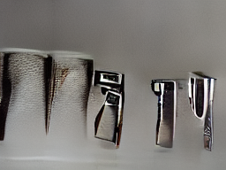

Marc Marquez memenangi MotoGP San Marino 2026 setelah membukukan waktu terbaik dalam perlombaan kedua dan mengemas total 274 poin, yang membuatnya berada di posisi pertama klasemen sementara. Jorge Martin menempel pada peringkat kedua dengan 274 poin, sedangkan Marco Bezzecchi muncul di ketiga dengan 241 poin. Marquez berhasil mengambil alih perlombaan setelah insiden jatuhnya Bezzecchi dan mempertahankan posisi selama beberapa lap.
PT Arfadia Digital Indonesia menaruh tiga laporan risetnya di Zenodo, repositori terbuka CERN yang menyediakan DOI. Laporan tersebut mencakup analisis digital marketing, SEO, dan benchmarking industri keuangan. Angka-angka dalam laporan tidak bisa direvisi diam-diam karena DOI hanya membuat publikasi dapat dirujuk secara permanen. Arfadia mempublikasikan data pendukung tujuh kampanye klien serta merilis metodologi internal RoGEO untuk mengukur visibilitas pencarian dan AI dalam pasar Indonesia.
Titip Api Karhutla di Kalimantan dan Sumatera Turun Jadi 121 Titik
Pemerintah menangani penurunan jumlah titip api karhutla dari sebelumnya mencapai 567 kelebihan menjadi 446. Data SiPongi yang dikeluarkan pada Minggu (13/9) menyebabkan penguatan patroli, groundcheck dan operasi pemadaman.
Ristianto Pribadi dari Kemenhut menegaskan penurunan terbesar di wilayah Kalimantan Tengah dan Selatan serta Sumatera Barat. Sementara itu Riau dan Jambi tidak ditemukan titik api, namun OMC dilakukan di kedua provinsi tersebut.
Pemerintah juga menggalakkan masyarakat untuk tidak membuka atau membersihkan lahan dengan cara pembakaran karena dapat menyebabkan kebakaran.
KM Virgo Transport 8 hilang kontak di Laut Jawa sekitar pukul 02.00 Wita pada Minggu (13/9/2026), mengalami kemiringan dan listing di Masalembo. Kapal membawakan 243 orang, termasuk kru, mitra kerja, penumpang dewasa, anak-anak, sopir, dan kernet. Operasi penyelamatan dilakukan bersama kapal-kapal sekitar lokasi kejadian dan tim SAR gabungan dengan dukungan Kapal Negara Kenavigasian KN Kunyit. Pemeriksaan masih dilakukan untuk mengetahui faktor penyebab kecelakaan, termasuk dampak terhadap harta benda lainnya dan kerugian dari pencemaran lingkungan. Posko di Terminal Penumpang Bandarmasih, Pelabuhan Trisakti, Banjarmasin digunakan untuk memperkuat koordinasi dengan berbagai pihak dalam penanganan insiden tersebut.
PT Pegadaian menggandeng Kadin Indonesia untuk memperluas ekosistem emas dan membuka akses pembiayaan bagi dunia usaha. MoU ditandatangani oleh Ketua Umum Kadin Anindya Novyan Bakrie dan Direktur Utama Pegadaian Damar Latri Setiawan, yang menekankan sinergi antara jaringan kedua lembaga untuk memperluas pemanfaatan produk emas di dunia usaha. Layanan ini meliputi aplikasi Tring by Pegadaian dan 20 unit ATM Emas, serta pelatihan untuk meningkatkan literasi keuangan. Damar menekankan bahwa pegadaian akan mempertahankan jaringan transaksi fisik emas dan mengembangkan layanan digital dalam hal pembiayaan investasi dan tabungan emas bagi UMKM dan korporasi, serta pelaku usaha di bawah naungan Kadin Indonesia.
Desa Tanjung Baik Budi, Kecamatan Matan Hilir Utara (MHU), Kabupaten Ketapang mengalami krisis air bersih akibat kondisi cuaca dan posisi geografis di daerah pesisir. Polres Ketapang meneruskan kegiatan Mobile Water Treatment untuk membantu mendapatkan air bersih bagi warga desa tersebut.
Kegiatan ini dilaksanakan oleh Kapolres Ketapang AKBP Putra Pratama, yang menekankan pentingnya akses terhadap air bersih. Polres Ketapang mengoperasikan kendaraan Mobile Water Treatment yang dapat mengolah air baku dari berbagai sumber menjadi air layak konsumsi.
Kendaraan ini dilengkapi dengan sistem filtrasi, sinar ultraviolet (UV), dan teknologi membran reverse osmosis (RO) untuk memenuhi kebutuhan masyarakat. Kapasitas produksi kendaraan tersebut bergantung pada jenis air baku yang digunakan: 400 liter per jam jika menggunakan bahan baku asin, atau sekitar 2.000 liter per jam jika menggunakan air biasa.
Air bersih disalurkan Polres Ketapang setelah dilakukan pengecekan dan pemenuhan standar kesehatan. Bantuan ini mencakup
Manchester United mengalami kekalahan serius melawan Manchester City dalam pertandingan pekan keempat Liga Inggris di Old Trafford pada Minggu (13/9/2026) malam WIB. Meski bertindak sebagai tuan rumah, tim Setan Merah kalah 0-1 dengan gol tunggal Erling Haaland dalam menit ke-60.
Manchester United terancam menjadi taman bermain rival sekotanya setelah menghadapi jumlah pemain Manchester City sebanyak 70 menit dari awal pertandingan. Phil Foden, yang dikeluarkan oleh wasit karena diganjar kartu merah, tidak bisa membantu timnya mempertahankan keunggulan.
Kekalahan ini jelas menjadi bukti bahwa performa Manchester United masih terjebak dalam situasi sulit musim ini. Sementara itu, mereka baru bisa memetik dua kemenangan dari lima laga yang dijalani: menang 5-2 melawan Ipswich Town dan meraih hasil imbang atas Sabah.
Dalam pertandingan tersebut, Manchester United terancam menjadi taman bermain rival sekotanya setelah menghadapi jumlah pemain sebanyak 70 menit dari awal pertandingan. Phil Foden yang dikeluarkan oleh wasit karena diganjar kartu
Terjadi kebakaran di wilayah TPST Bantargebang, Kota Bekasi, Jawa Barat pada Minggu (13/9), sekitar pukul 20.30 WIB. Sebanyak empat unit mobil pemadam kebakaran (Damkar) diturunkan untuk menjinakkan api di lokasi tersebut. Api berhasil padam sekitar pukul 22.00 WIB, dan area yang terbakar hanya sedikit. Polisi menyelidiki kasus tersebut lebih lanjut dengan menggunakan empat unit mobil Damkar.
Basarnas menginformasikan bahwa enam korban meninggal dunia dari kecelakaan kapal KM Virgo Transport 8 di Laut Jawa, terdiri dari tiga orang selamat dan lima orang meninggal. Kapal tersebut membawa total 243 orang saat berlayar dari Surabaya menuju Banjarmasin. Operasi pencarian dilakukan dengan mengevakuasi korban menggunakan kapal-kapal TB Mauhaw IX, TCP, serta MV Haida. Tim SAR gabungan masih melakukan penyisiran untuk mencari korban lain yang belum tercatat dalam daftar evakuasi.
Ringkasannya:
Menteri Perhubungan Dudy Purwagandhi menginstruksikan seluruh jajaran untuk memprioritaskan pencarian, evakuasi, serta pendataan penumpang KMP Virgo Transport 8 yang terjebak kecelakaan di laut Jawa. Menhub menyampaikan duka cita atas korban dan berharap mereka segera pulih.
Dalam operasional selama sore hari ini, Basarnas berhasil mengevakuasi 107 penumpang selamat dari kapal tersebut dengan meninggal dunia sedangkan 6 tetap dalam proses pencarian. Tim gabungan intensif melakukan penyisiran dan evakuasi di titik kejadian.
Posko Terpadu resmi dibuka oleh Kementerian Perhubungan untuk mempermudah alur koordinasi, pendataan korban, serta memberikan dukungan medis kepada penumpang yang ditemukan. Menhub mengapresiasi jajaran pihak terkait dalam operasional kemanusiaan ini dan berharap penyebab kecelakaan dapat diketahui secara jelas untuk meningkatkan keselamatan pelayaran di masa mendatang.
Tim penyidik KPK melakukan penggeledahan ke rumah kontraktor Adi Sumarta di Bengkulu. Dua koper berisi dokumen penting ditemukan dalam operasi tersebut, menunjukkan kesulitan terhadap penyelesaian kasus yang sedang berjalan. Operasi ini merupakan bagian dari penyidikan korupsi melibatkan pejabat di lingkungan Pemerintah Kota Bengkulu dan Dinas PUPR.
Musabaqah Tilawatil Qur’an Nasional XXXI di Semarang mengundang 2.242 peserta dari 37 provinsi untuk kompetisi dalam delapan cabang, 24 golongan, dan 48 kategori musabaqah. Direktur Jenderal Bimbingan Masyarakat Islam menekankan keindahan instrumen pembinaan Al-Qur’an yang inklusif. Kompetisi melibatkan 155 Dewan Hakim untuk menjaga independensi, objektivitas dan profesionalisme dalam penilaian hasil kompetisi.
Polri menggerakkan tiga kapal polisi untuk memperkuat operasi SAR KM Virgo Transport 8 di Tanjung Selatan, Kalimantan Selatan. Operasi ini melibatkan Basarnas, TNI AL, KSOP, dan unsur terkait lainnya. Kapal yang diterbangkan adalah KP Laksmana-7012 (BKO Kalsel), KP Ibis-6001 (BKO Kalteng), dan KP Manyar-5003 (BKO Surabaya). Operasi juga didukung oleh KN Laksamana milik Basarnas, KSOP, KM Hai Da, KM Niki Mila Utama, TB TCP, TB Mauha IX, dan KM Cahaya Bahati Jaya. Posko operasi dilakukan di Dermaga Trisakti Banjarmasin untuk koordinasi dan pemantauan.
Tanpa disadari, kebiasaan-kebiasaan ini dapat membuat suami atau istri perlahan menjauh secara emosional dalam rumah tangga:
1. Terlalu Banyak Menuntut: Tantangan yang awalnya sederhana bisa berubah menjadi tuntutan egois jika tidak diatasi dengan cara yang lebih sehat.
2. Sering Menghakimi dan Tidak Menghargai Pasangan: Belajar berkomunikasi dengan cara yang lebih sehat merupakan proses, namun penting untuk menghindari konflik semakin besar.
3. Mudah Meledak-ledak Saat Marah: Jika Anda terbiasa melontarkan perkataan tanpa berpikir ketika emosi memuncak, belajar mengendalikan diri menjadi kunci dalam pernikahan.
Penting bagi pasangan untuk mengenali kebiasaan-kebiasaan ini sebelum masalah rumah tangga semakin sulit diperbaiki.
Krisis perang Rusia-Ukraine kembali menjadi topik penting setelah Trump menunjukkan keberhasilannya dalam mengakhiri konflik tersebut. Meskipun kerangka kesepakatan telah dibuat, perselisihan tentang wilayah yang harus dilepaskan Ukraina masih menghambat tercapainya kesepakatan akhir. Presiden Rusia Vladimir Putin menetapkan garis militer di Donbas sebagai konsesi untuk mempertahankan kekuasaan tersebut dari Kyiv, sementara Kyiv menolak penyerahan wilayah yang masih berada dalam kendali mereka. Dalam situasi ini, diplomat AS sedang mencoba mengembalikan kedua pihak ke meja perundingan trilateral untuk membahas formula perdamaian dan mempersiapkan kemungkinan dimulainya pembicaraan lagi pada Oktober mendatang.
Pemerintah Aceh sedang memaksimalkan Kawasan Industri Ladong (KIA) di Kabupaten Aceh Besar menjadi pusat ekonomi baru. KIA Ladong, sebagai salah satu aset strategis Pemda Aceh dengan potensi besar untuk pertumbuhan ekonomi, mendapatkan perhatian yang lebih tinggi. Investasi dan kegiatan industri akan semakin siap menerima investor dan pelaku usaha setelah infrastruktur dasar kawasan kuat serta kemudahan layanan diberikan kepada mereka. Tiga tenant telah memanfaatkan KIA Ladong, termasuk pengembangan ekonomi kreatif atau creative hub, pengolahan garam industri, dan pabrik manufaktur baja ringan. Calon investor juga sedang dipertimbangkan dengan rencana pembahasan lebih lanjut terkait lahan di KIA Ladong. PT Pembangunan Aceh (PEMA) berupaya memberikan layanan yang responsif, transparan dan terarah kepada investor agar investasi dapat dilakukan dengan kepastian.
ASUS ExpertBook B9406CAA menawarkan nilai investasi optimal dengan garansi panjang, layanan next business day on-site service dan dukungan teknis prioritas, serta kesiapan AI. Ini membantu memperpanjang masa penggunaan perangkat dan mengurangi biaya operasional tersembunyi. Dengan harga mulai sekitar Rp 32 juta, laptop ini menawarkan keuntungan yang signifikan bagi banyak perusahaan dalam hal investasi teknologi.
Manchester City menang telak 1-0 atas Manchester United dalam lanjutan Liga Inggris. Phil Foden mendapat kartu merah setelah melayangkan kakinya ke arah perut Bruno Fernandes, membuat The Citizens harus bermain dengan 10 pemain sejak itu. Erling Haaland mencetak gol untuk City di menit ke-60. Meski terpaksa memegang bola hanya 10 orang, Manchester United gagal membuka keunggulan dan City unggul 1-0 hingga pertandingan berakhir tanpa gol tambahan.
Ukraina menyampaikan Rusia telah menyerang kereta api rute Kyiv-Warsawa, terjadi sekitar dua kilometer di perbatasan Polandia. Tidak ada korban jiwa dalam insiden tersebut. Operator mengatakan para pejabat yang berada dalam kereta diplomatik diserang oleh serangan dari Rusia. Ukraine menegaskan bahwa Rusia sengaja melakukan serangan untuk mencegah penyebab penyebaran agresi ke Eropa. Polandia, salah satu sekutu utama Ukraina, memimpin rapat darurat setelah insiden tersebut dan menginginkan Rusia tidak meningkatkan eskalasi perang dalam beberapa pekan mendatang.
Pelajar dalam demonstrasi pada 27 Agustus 2026 ditangkap oleh polisi, sekitar seratus orang. Keikutsertaan pelajar merupakan kejadian berulang yang berakhir di barak pembinaan. Demonstrasi ini terkait kesenjangan antara pejabat publik dan warga, dengan kelompok tertentu memobilisir pelajar untuk ikut serta dalam demonstrasi anarkis.
Pola mobilisasi pelajar telah dikenal sebelumnya, seperti kluster yang dibayar puluhan ribu rupiah. Tersangka terlibat penyerangan dan merusak fasilitas umum juga ditangkap oleh polisi. Kepolisian menegaskan bahwa informasi transaksi ini merupakan bukti dari pemeriksaan dan barang bukti yang dikumpulkan.
Pelajar dalam demonstrasi tersebut tidak melakukan kesalahan secara fisik, tetapi mereka dilakukan penangkapan tanpa dasar yang kuat. Direktur Sosiologi Fakultas Ilmu Sosial dan Hukum Universitas Negeri Jakarta menekankan pentingnya transparansi informasi dari penegak hukum untuk membaca fenomena pelajar ikut demonstrasi.
Polda Metro Jaya mengidentifikasi tiga kluster besar mobilisasi pelajar, yang dibayar pul
Kondisi cuaca menjadi kendala utama dalam operasi pencarian lima jurnalis dan tiga kru kapal yang hilang di Selat Sunda. Helikopter belum dapat diterbangkan, menggiring perhatian kegiatan SAR gabungan lainnya seperti KRI Leuser dan KAL Pohawang. Komandan Pangkalan TNI Angkatan Laut (Danlanal) Banten menegaskan personel udara tetap disiagakan meski belum dapat diterbangkan, sementara helikopter akan diterbangkan apabila kondisi cuaca memungkinkan. Operasi SAR gabungan ini terus dilakukan untuk mencari kedua korban yang hilang dalam kejadian tersebut.
Manchester City menang 1-0 atas Manchester United di lanjutan Liga Inggris setelah Erling Haaland mencetak gol kemenangan pada babak kedua. Meski United memiliki tekanan lebih kuat, City berhasil membuka keunggulan dengan tembakan jarak dekat yang disahkan oleh VAR. Sementara itu, Manchester United terus berusaha namun gagal memperkuat permainannya hingga akhir pertandingan. Hasil ini mengurangi kedudukan Manchester United di klasemen sementara Liga Inggris dan membawa City ke posisi kedua dengan 12 poin dari empat pertandingan, hanya kalah selisih gol dari Arsenal.
Jenderal Agus Subiyanto menggelar 72 lomba open turnamen dari berbagai cabang olahraga untuk memperingati HUT TNI ke-81. Turnamen diadakan di GOR Soemantri Brodjonegoro, Jakarta pada September dengan tema "Prestasi Olahraga TNI, Prestasi Olahraga Indonesia". Ini merupakan ajang pembibitan dan pembinaan prestasi olahraga Indonesia yang dilakukan oleh seluruh klub universitas.
Rupiah melemah terhadap Dolar AS hari Senin, 14 September 2026, bergerak antara Rp17.610—Rp17.650 per dolar AS. Ini diprediksi akan terjadi dalam sepekan ke depan dengan level Rp17.500—Rp17.850. Sentimen eksternal seperti ketegangan geopolitika antara Iran dan Amerika Serikat, serta kenaikan harga minyak mentah dunia yang melebihi US$100 per barel mempengaruhi nilai tukar rupiah.
Penumpang KMP Virgo Transport 8 telah dilakukan evakuasi ke pelabuhan Banjarmasin menggunakan kapal hiburannya sendiri. Proses ini melibatkan korban yang terdampak dari kecelakaan tersebut dan memakan waktu beberapa jam.
Yayasan Global CEO Indonesia akan menggelar 10th Anniversary Global CEO Indonesia Golf Tournament 2026 di Royale Jakarta Golf Club pada Sabtu (10/10/2026). Turnamen ini menjadi bagian dari perayaan satu dekade perjalanan organisasi dan mempertemukan para pemimpin sektor. Peserta mendapat ruang untuk memperluas jejaring dan membuka peluang kolaborasi dalam pertandingan berkompetisi di 27 hole dengan tema "A Decade of Leadership, Connection, and Collaborations". Turnamen akan ditutup dengan awarding night dan perayaan satu dekade Global CEO Indonesia.
Wanita muda ditemukan meninggal dunia di Hotel Tanah Abang, Jakarta Pusat. Indikasi pembunuhan diketemukan dalam kamar 304 hotel tersebut pada Sabtu (12/9/2026). Korban bernama Intan Rahmania, warga Ciampea, Bogor, ditemukannya dalam keadaan tewas di Kebon Kacang. Polisi masih melakukan penyelidikan intensif untuk mengungkapkan kronologi peristiwa tersebut dan mengejar pelaku pembunuhan.
Kapal motor (KM) Virgo Transport 8 hilang kontak di Laut Jawa setelah melintas Selat Madura menuju Banjarmasin. Data pergerakan KM terekam AISITS, menunjukkan kecepatan sekitar 12-14 knots dari Jamrud hingga Karang Jamuang pada pukul 12:00 WIB. Sinyal terakhir ditembus pada pukul 22:33 WIB dengan kecepatan 12,9 knots di Selat Madura. Data historis sistem penting dalam investigasi kecelakaan dan mengidentifikasi insiden laut.
Asuransi Astra meluncurkan tiga inovasi baru: aplikasi myGarda, situs gardaoto.com, dan Garda Siaga. Inovasi ini meningkatkan kemudahan penggunaan layanan asuransi dengan integrasi berbagai produk dalam satu platform. Dengan teknologi terbaru seperti chatbot GarXia, OCR, Virtual Survey, dan bak derek hydraulic flatbed untuk evakuasi kendaraan modern, inovasi ini memperluas jangkauan layanan Garda Siaga ke 31 titik di seluruh Indonesia.
Deden, seorang content creator asal Jawa Tengah yang berusia 40 tahun, telah menghadapi perjalanan ke Rusia sebagai tentara militer dengan tawaran kerja dari agen perekrut bernama Dima.
Pertemuan pertama antara Deden dan Dima melibatkan komentar mendukung presiden Vladimir Putin terkait Ukraina, yang kemudian membawa kedekatan mereka. Setelah wawancara selama empat hari dengan tata kelola operasi prosedur (SOP) militer Rusia, Deden menyetujui pekerjaan di pemerintahan atau kementerian Rusia.
Dalam perjalanan ke Rusia, Deden mengalami serangkaian pengaksesan dan tes yang dilakukan oleh tentara Rusia. Meski tidak memiliki pengalaman sebelumnya dengan pelatihan militer, Deden berhasil melalui proses ini setelah mendapatkan tanda tangan kontrak untuk pekerjaan di pemerintahan Rusia.
Dalam perjalanan ke Moskow, Deden menghadapi tantangan yang semakin mengejutkan. Meski berada dalam lingkungan militer dan memenuhi semua tes kesehatan, Deden ditempatkan di sebuah hutan untuk pelatihan lanjutan dengan tentara
Maudy Ayunda, aktris dan penyanyi, menjadi sorotan setelah membahas tentang kelelahan menghadapi berita buruk di Indonesia melalui video YouTube. Ia menekankan pentingnya menjaga kesehatan mental ketika terus-menerus menerima informasi negatif dari media sosial dan pemberitaan internasional, termasuk lokal. Maudy menyampaikan bahwa kepedulian terhadap berbagai persoalan tidak selalu membutuhkan penanganan yang mudah, dengan mengakui perasaan kewelahan sebagai hal normal.
Pabrik Ritsleting Pakaian di Batuceper, Kota Tangerang, Banten terbakar pada Minggu (13/9). Informasi dari petugas keamanan pabrik menunjukkan bahwa kebakaran muncul di salah satu gudang. Dugaan penyebabnya adalah hubungan arus pendek di gudang yang memproduksi ritsleting pakaian. Proses pemadam terkendala kondisi pabrik tertutup dan titik api berada dalam bangunan, sehingga tidak ada korban jiwa namun kerugian material belum diketahui.
PT Elnusa Petrofin memperkuat dukungan kepada PT Pertamina Patra Niaga dengan menyiakakan lebih dari 500 Awak Mobil Tangki (AMT) serta menambah puluhan armada dari berbagai daerah untuk mengoptimalkan distribusi bahan bakar minyak di Kota Makassar dan sekitarnya. Operasional perusahaan saat ini difokuskan pada penguatan distribusi BBM agar pasokan kepada masyarakat tetap terjaga, dengan menambah 30 awak tambahan dari wilayah operasional lainnya untuk memastikan ritase distribusi berjalan maksimal selama 24 jam.
Kementerian Luar Negeri Palestina menyambut baik Deklarasi New Delhi dalam KTT BRICS ke-18, menegaskan dukungan terhadap perjuangan Palestina dan rencana solusi dua negara berdasarkan 4 Juni 1967.
Kapal Virgo 8 hilang kontak dan kehilangan semua informasi terakhir dengan penumpang. Keluarga yang mencari adik kandungnya, Stiewiansyah Manohoa (44), menemui keluhan mereka di Pelabuhan Tanjung Perak, Surabaya. Adiknya mengatakan ponsel rusak dan nomor baru digunakan untuk sementara waktu. Komunikasi terakhir dengan adiknya dilakukan pada Jumat malam 11/9 WIB melalui video call. Pesan WhatsApp pertama dari adiknya, menunjukkan bahwa kapten Kapal Virgo 8 dan sejumlah kru musik bagian layanan selamat, namun kabar mengenai kondisi kru musik masih belum diketahui. Petugas Polres Pelabuhan Tanjung Perak membuka posko terpadu untuk melayani keluarga yang mencari informasi tentang keberadaan penumpang saat insiden hilang kontak dan menyiapkan Posko Ante Mortem bagi mereka yang tidak menemukan nama kerabat dalam daftar manifes resmi.
Indonesia Bullion Market Association (IBMA) resmi diluncurkan di BSI Tower, Jakarta, Kamis 20 Agustus 2026. Asosiasi ini hadir sebagai wadah untuk menyatukan berbagai kekuatan dalam ekosistem bullion sekaligus menjadi fondasi penguatan industri emas nasional.
IBMA dipelopori oleh 11 perusahaan yang mewakili berbagai sektor dalam rantai ekosistem emas, dari pertambangan hingga jasa keuangan dan platform pasar. Program prioritas IBMA meliputi edukasi, penyusunan kajian regulasi, serta penyelenggaraan Indonesia Gold Expo.
Menteri Koordinator Bidang Perekonomian Airlangga Hartarto mengatakan kehadiran IBMA merupakan fondasi penting untuk mengintegrasikan ekosistem emas di Indonesia. Presiden Prabowo Subianto telah meluncurkan layanan usaha bullion atau Bank Emas, yang mendapat respons positif dari masyarakat.
IBMA menyiapkan sejumlah program prioritas dalam jangka pendek, menengah, dan panjang untuk memperkuat ekosistem emas di Indonesia. Dialog ihwal ekosistem industri emas sudah dimulai pada hari peluncuran IBMA dengan pemangku kepentingan memb
Menteri Perhubungan Dudy Purwagandhi meminta seluruh jajaran dan pihak terkait untuk memprioritaskan pencarian dan evakuasi penumpang KMP Virgo Transport 8 setelah kecelakaan di Laut Jawa. Kapal ini mengangkut 136 orang, dengan 107 ditemukan selamat dan 6 meninggal dunia hingga sore hari. Duta Besar Basarnas menyelesaikan evakuasi sebanyak 124 korban, sementara investigasi penyebab kecelakaan masih dilakukan oleh Komite Nasional Keselamatan Transportasi (KNKT).
PT Bank Negara Indonesia (Persero) Tbk atau BNI hadirkan zona Travel sebagai solusi kesejahteraan perjalanan dalam gelaran BNI wondrX 2026 yang diadakan di ICE BSD City pada tanggal 21-23 Agustus. Zona ini menyediakan berbagai kebutuhan perjalanan, termasuk tiket pesawat, akomodasi, paket perjalanan, layanan paspor dan visa, serta pengajuan kenaikan limit kartu Kredit BNI.
BNI juga bekerja sama dengan Direktorat Jenderal Imigrasi untuk menyediakan layanan pembuatan paspor baru atau penggantian. Selain itu, BNI turut menghadirkan program bundling tabungan yang menawarkan cashback e-SIM dan hadiah sesuai ketentuan.
Zona Travel juga berbagi dengan maskapai domestik dan internasional serta agen perjalanan untuk memudahkan masyarakat dalam menyusun rencana liburan, perjalanan bisnis, umrah, atau wisata rohani.
Pergerakan indeks harga saham gabungan (IHSG) pada pekan ini diperkirakan mengalami volatilitas antara 6,450-6,700 seiring dengan pencapaian beberapa bank sentral dunia dalam kebijakannya. Faktor kenaikan harga minyak mentah juga menjadi perhatian pasar. Tim riset Phintraco Sekuritas memperkirakan IHSG akan bergerak pada rentang 6,450-6,700 sebelum akhir pekan ini dan menekankan pentingnya waspada terhadap koreksi atau aksi ambil untung. MNC Sekuritas juga memberikan rekomendasi saham dengan memperkirakan ADMR akan tetap bergerak dalam rentang 1,540-1,680 dan INET pada rentang 296-366. Selain itu, NCKL diharapkan koreksi terus dilakukan untuk menguji level support 1,625.
Apresiasi Pemerintah Daerah Berprestasi 2026 kembali dilaksanakan, dengan batch kedua ini menekankan empat kategori baru: Akses dan Kualitas Layanan Kesehatan, Implementasi Program 3 Juta Rumah, Pengelolaan Sampah dan Lingkungan Asri, serta Pengendalian Inflasi. Batch pertama mencakup Penanggulangan Kemiskinan dan Stunting, Entrepreneur Government/Creative Financing, Penurunan Tingkat Pengangguran, serta Pengelolaan Inflasi. Menteri Dalam Negeri menyatakan bahwa penerapan indikator ini mengacu pada pesan Presiden Prabowo Subianto dan arahan Asta Cita atau delapan misi utama pembangunan nasional. Kategori akses penduduk terhadap layanan kesehatan menekankan kemampuan masyarakat memperoleh pelayanan kesehatan yang mudah diakses dan berkualitas, serta Program 3 Juta Rumah mencakup dukungan kebijakan dalam menyediakan hunian yang layak bagi masyarakat.
Hasil pertandingan La Liga Getafe vs Deportivo La Coruna, dimenangkan oleh Deportivo La Coruna dengan skor 1-2. Pierre-Emerick Aubameyang mencetak gol untuk tim tuan rumah dan mempertahan kemenangan mereka di papan klasemen La Liga.
Gol pertama dari Getafe ditempatkan pada menit ke-66 oleh Ramon Terrats, sementara gol kedua dicetak oleh Yeremay Hernandez Cubas melalui pergantian taktis Deportivo La Coruna. Aubameyang memperkuat kemenangan dengan golnya yang kelima di La Liga musim ini.
Getafe terjebak dalam kekalahan ketiga berturut-turut, sementara Deportivo La Coruna berhasil mengekspresikan konsistensinya setelah satu poin dari laga tandang. Tim asal Madrid mengamankan peringkat 6 di klasemen dengan catatan dua kemenangan dan tiga hasil imbang.
Hasil ini memberi tantangan bagi Jorge Bordalas untuk memperbaiki tren kekalahan Getafe, sementara Antonio Hidalgo berharap satu poin dari laga tandang dapat membantu Deportivo La Coruna terus bersaing di atas klasemen.
PT Pertamina Patra Niaga Refinery Unit (RU) IV Cilacap secara resmi membuka tender terbuka untuk pekerjaan "PENGGANTIAN COLUMN ASSY 11C-1 AREA FOC I PT. PERTAMINA PATRA NIAGA DI RU IV CILACAP". Tender ini merupakan bagian dari upaya perusahaan dalam menjaga keandalan operasional dan memastikan proses produksi di area Fuel Oil Complex (FOC) I. Dengan mekanisme tender terbuka, PT Pertamina Patra Niaga memberi kesempatan yang sama kepada perusahaan-perusahaan untuk berpartisipasi dalam proses pengadaan tersebut. Proses ini dilaksanakan secara transparan dan akuntabel sesuai dengan ketentuan dan tata kelola perusahaan. Peserta dapat melakukan pendaftaran melalui situs web resmi di https://ptm.id/daftarGEPSMART . Informasi lebih lengkap mengenai ruang lingkup pekerjaan, persyaratan administrasi, serta ketentuan teknis dapat diperoleh dengan mengunduh dokumen tender yang telah disediakan. Pertamina Patra Niaga RU IV Cilacap meminta seluruh calon peserta mempelajari dokumen secara saksama sebelum mengajukan penawaran dan mengimbau untuk
Hana Kuraki, bintang porno Jepang yang ditemukan meninggal dunia pada usia 25 tahun, diketahui memiliki sejarah kekerasan serius beberapa bulan sebelumnya. Dugaan tersebut semakin kuat setelah kematian aktris terkait kabar tentang hubungan penuh tekanan yang diberitakan oleh host Taira. Publik masih menunggu konfirmasi resmi dari polisi mengenai kedua kasus ini, dan perhatian mereka juga akan ditujukan pada kondisi Hana sebelumnya di industri hiburan akibat cedera serius.
Kimi Antonelli berhasil menjuarai Grand Prix Spanyol 2026, mengungguli rival utamanya Max Verstappen dan Lando Norris. Kemenangan ini membuatnya kembali ke puncak klasemen dengan keunggulan selisih 81 poin dari rekan setimnya. Situasi pit stop menjadi faktor penting dalam balapan, dimana Antonelli berhasil mengambil alih posisi terdepan meskipun Norris harus menyerah akibat proses pergantian ban lambat. Kemenangan ini juga membuka jalan bagi pembalap berusia 20 tahun tersebut untuk mempertahankan kekuasaannya di Formula 1 musim ini.
Populer Regional: Tenggelamnya Kapal Virgo Transport 8 - Kakek 63 Tewas Ditikam di Sragen
KM Virgo Transport 8 tenggelam setelah dipukul oleh cuaca buruk, mengakibatkan 107 orang selamat dan 6 tewas. Sadimin (63), warga Masaran, Sragen, tewas ditikam tetangganya, Satriawan (36). Penikaman diduga dipicu cekcok soal pengairan sawah beberapa hari sebelumnya. Tim SAR berhasil mengevakuasi 107 orang selamat dan enam orang meninggal dunia.
Kebakaran hutan di Taman Nasional Bromo-Tengger-Semeru semakin meluas, merembet ke Malang-Lumajang. Titik api kini berada tepat di jalan raya Malang-Lumajang, mengganggu akses jalur darat yang membuka Desa Ngadas dan Desa Ranupane. Polres Malang telah menambahkan personel untuk melindungi mobilitas armada pemadam kebakaran. Kebakaran awal terjadi di Blok Watangan dan Blok Watu Gede, Provinsi Jawa Timur, kemudian merambat menuju kawasan hutan Pos Jemplang, Malang-Lumajang. Petugas gabungan berupaya melakukan pemadaman dengan menggunakan hydrant portabel, sprayer elektrik, penyiraman manual dan pendinginan dahan pohon untuk menghentikan api susulan. Penutupan kawasan wisata Gunung Bromo di Taman Nasional Bromo-Tengger-Semeru (TNBTS) mulai dari Sabtu 12 September hingga waktu yang belum ditentukan, mempertimbangkan kondisi medis dan keamanan kawasan.
Korban kecelakaan Kapal Motor (KM) Virgo Transport 8 yang terbalik di Laut Jawa berhasil ditemukan setelah ditolong oleh nelayan, menghindari kematiannya. Korban, Ahmadi (42), menjadi korban terdampar dan disebut sempat mengapung di permukaan laut. Istri suaminya, Nani Rohani (38), mendapatkan kabar tentang keadaan suami melalui WhatsApp dari nelayan yang membantu. Korban ditemukan dalam keadaan selamat setelah dipulangkan oleh SAR dan berada di Pelabuhan Trisakti Banjarmasin.
Menteri Perhubungan Dudy Purwagandhi memprioritaskan pencarian dan evakuasi korban KMP Virgo Transport 8 yang mengalami kecelakaan di perairan Laut Jawa, Minggu (13/9). Prioritas utama adalah mencari seluruh penumpang serta awak kapal. Menhub menyampaikan duka cita mendalam atas tragedi ini dan berharap korban segera pulih dari penyakitnya. Kapal tersebut bertolak dari Pelabuhan Surabaya pada 12 September dengan tujuan Banjarmasin, mengangkut 243 orang. Sebanyak 6 korban meninggal dunia telah ditemukan dan 107 berhasil dilakukan evakuasi. Komite Nasional Keselamatan Transportasi (KNKT) sedang melakukan investigasi penyebab kecelakaan ini, yang diharapkan dapat diketahui secara jelas untuk meningkatkan keselamatan pelayaran di masa depan.
Kedekatan warga Jawa Tengah dan para peserta MTQ Nasional 2026 menjadi sorotan positif dalam acara ini, yang menghadirkan kemeriahan dengan fasilitas lengkap serta interaksi antar masyarakat lokal. Keramahan masyarakat diwakili oleh salah seorang kafilah asal Maluku Utara, Umar Mukhtar, dan menunjukkan kekuatan persaudaraan dalam setiap penyelenggaraan MTQ. Selain itu, warga juga terkesan dengan tinggi antusiasme masyarakat yang hadir selama pembukaan acara serta berbagai fasilitas seperti masjid dan kuliner yang disediakan di Semarang dan Jawa Tengah.
Pimpinan kafilah Lampung, Makmur, menilai penyelenggaraan MTQ Nasional kali ini memiliki peningkatan dibandingkan sebelumnya, terutama dari sisi fasilitas dan lokasi kegiatan. Area strategis dan nyaman untuk mendukung pelaksanaan acara membuat rangkaian kegiatan berlangsung lebih optimal.
Gubernur Jawa Tengah Ahmad Luthfi menyebut MTQ Nasional XXXI sebagai ruang perjumpaan masyarakat dari berbagai daerah, serta menjadi sarana memperkenalkan potensi ekonomi dan kear
Ela Nur Atika menunggu kabar suaminya Saiful Nuruddin yang hilang kontak di kapal Virgo Transport 8 di Laut Jawa. Suami Ela berangkat membawa truk ekspedisi ke Banjarmasin, dan keterlambatan ini mengakibatkan mereka tidak bisa bertemu sebelum perjalanan dimulai. Saiful meninggalkan beberapa pesan video terakhir yang hanya dapat dibaca di tanda centang. Setelah berharap dari 07:30 WIB hingga pukul 8:30, Ela tak mendapatkan balasan dan mengetahui bahwa suaminya telah dievakuasi dalam keadaan selamat. Tangis Ela yang biasanya tertahan pecah ketika dia diberitahu tentang kabar baik tersebut.
Lintang Sapto Edi, 4 tahun lebih muda dari kakaknya Arbas Basuki, ikut berlayar dalam misi pencarian terhadap jurnalis dan awak kapal yang hilang kontak setelah letusan Gunung Anak Krakatau. Dalam perjalanan ke ujung mulut Samudra Hindia di Selat Sunda, Lintang ditempatkan di geladak belakang Kapal Negara Tetuka 247 milik Badan Pencarian dan Pertolongan Nasional (Basarnas). Di sana, dia bertemu dengan personel SAR yang berbagi pengaruh dengan Arbas Basuki. Meski tak banyak bicara selama misi, Lintang tetap menunggu kemungkinan untuk bertemu sang kakaknya di laut yang begitu luas dan gelap. Dalam perjalanan 14 jam melalui ombak Selat Sunda, Lintang menciptakan kenangan bersama Arbas Basuki dalam berbagai kegiatan seperti bekerja sebagai pengemudi travel. Namun, pencarian hari itu belum menemukan petunjuk tentang keberadaan jurnalis dan awak kapal yang hilang tersebut termasuk Arbas.
PT Telkom Data Ekosistem (NeutraDC) bekerjasama dengan PT PLN untuk mempersiapkan pasokan energi bagi pengembangan pusat data berskala hyperscale di Cikarang, Jawa Barat. Kerja sama ini ditandai oleh penandatanganan nota kesepahaman antara Direktur Utama NeutraDC Group dan General Manager PLN UID Jawa Barat serta Direktur Utama PT PLN Electricity Services. Melalui kerja sama tersebut, NeutraDC menyiapkan ekspansi kapasitas pusat data di Cikarang hingga 200 megawatt secara bertahap untuk mengantisipasi meningkatnya kebutuhan komputasi seiring dengan pertumbuhan AI dan cloud computing. Kolaborasi ini juga mendukung strategi jangka panjang NeutraDC untuk memperkuat kapasitas infrastruktur digital Indonesia, yang merupakan bagian penting dari ekspansi infrastruktur pusat data di Cikarang.
Gubernur Sumatera Utara mengatakan dua siswa korban dugaan keracunan Makan Bergizi Gratis (MBG) di Kabupaten Karo dirujuk ke rumah sakit di Jakarta untuk menjalani perawatan lanjutan. Ini karena kondisi psikologis mereka lebih berat dibandingkan teman-temannya, mengingat komentar negatif dan cyberbullying yang terjadi setelah kasus tersebut menjadi perhatian publik. Bobby meminta masyarakat dan media ikut mendukung proses pemulihan korban dengan tidak memberikan tekanan tambahan kepada mereka.

Kemajuan cepat Houthi di Yaman menjadi titik balik perang Timur Tengah. Serangan pesawat nirawak Irak terhadap jaringan pipa Arab Saudi menunjukkan sifat mudah meledak yang lebih luas dari realitas Timur Tengah. Penguasaan Houthi atas kota-kota penting Yaman mempengaruhi keberlanjutan konflik di wilayah strategis tersebut, dengan intensitas ketegangan semakin tinggi sejak perang AS-Israel melawan Iran.
Puasa Senin Kamis memiliki keutamaan dalam bentuk ibadah kepada Allah SWT. Dilakukan dengan menahan diri dari makan, minum hingga membatalkan puasa sejak terbit fajar sampai matahari terbenam. Ini juga merupakan amalan yang dianjurkan dan dilaksanakan karena sunah Rasulullah SAW.
Puasa ini memiliki keistimewaan dalam halnya melatih kesabaran, mengendalikan diri, meningkatkan ketakwaan, dan mendorong rasa syukur terhadap berbagai nikmat yang diterima setiap hari. Selain itu, puasa juga dapat membentuk kebiasaan lebih baik dalam kehidupan sehari-hari.
Dalam menjalankan puasa ini, seseorang dianjurkan untuk berniat dengan hati-hati dan menahan diri dari makanan dan minuman serta hal-hal yang membatalkan puasa. Selain itu, pelaksanaannya dapat dilakukan setiap Senin dan Kamis sesuai kemampuan.
Puasa ini juga memiliki manfaat lain seperti melatih pengendalian diri, meningkatkan ketakwaan, menumbuhkembang empati terhadap orang yang mengalami kesulitan memenuhi kebutuhan hidup. Selain itu, puasa dapat
Presiden Amerika Serikat Donald Trump meminta Presiden Ukraina Volodymyr Zelenskyy untuk menghentikan serangan terhadap infrastruktur bahan bakar diesel Rusia. Trump menyebutkan bahwa serangan tersebut menjadi penyebab kelangkaan bahan bakar global yang mendorong kenaikan harga, bukan perang dengan Iran. Harga minyak mentah telah meningkat sejak AS dan Israel melancarkan perang terhadap Iran pada Februari lalu.
Ratusan pemukim Israel menyerbu pelataran Masjid Al-Aqsa di Yerusalem pada Ahad, dikawal polisi zionis yang memblokir aksi provokatif dan ritual Talmud. Pasukan Israel memperketat keamanan sekitar masjid dan Kota Tua Yerusalem. Organisasi "organisasi-Bait Suci" menyarankan para pendukungnya untuk ikut dalam tindakan serbu Masjid Al-Aqsa, dengan dalih tahun baru Yahudi. Otoritas Israel memblokir jalan-jalan dan mengurangi mobilitas warga Palestina di Yerusalem demi keamanan pemukim Israel yang melakukan aksi penyerbuan dan ritual di masjid.
Ruko di kawasan Asemka, Jakbar terbakar pada Minggu malam. Sebanyak 21 unit mobil pemadam kebakaran (Damkar) dikerahkan untuk menangani kejadian tersebut. Petugas dari Gulkarmat DKI Jakarta menerima laporan dan langsung bergerak memadukan api, sementara situasi masih dalam proses pemadam.
Lahan di pinggir jalan terbakar di Rumpin, Bogor Jawa Barat akibat puntung rokok yang menyala dan merambat ke rumput kering. Kejadian dilaporkan warga sekitar pukul 19.15 WIB. Kebakaran diduga dipicu oleh oknum membuang puntung rokok yang masih menyala di area lahan kosong, mengakibatkan terjadinya kebakaran lahan jauh dari lokasi permukiman warga. Tim pemadam kaceran dan berjalan aman dalam proses pemadaman selama kurang lebih satu jam.
Emil Audero, kiper Timnas Indonesia yang baru saja debut bersama Rayo Vallecano, berhasil menghentikan tendangan Kylian Mbappe di final Piala Dunia FIFA 2022. Penyelamatan itu mirip dengan gol Mbappe ke Emiliano Martinez dalam pertandingan sebelumnya dan menunjukkan kemampuan Audero tinggi saat berhadapan langsung dengan pemain bintang Real Madrid.
KPK melakukan penggeledahan ke rumah kontraktor Adi Sumarta dan anggota DPRD Kota Bengkulu, menargetkan kasus korupsi dalam lingkungan Pemerintah Kota Bengkulu. Penggeledahan dilakukan pada 13 Agustus 2026 di dua lokasi: kelurahan Tanah Patah (Adi Sumarta) dan Cempaka Permai (Vinna Ledy). Selanjutnya, KPK melakukan pemeriksaan terhadap mobil dan kediaman pejabat lain.
Ringkas Berita:
Suatu aplikasi wallpaper hidup bernama Sucrose Wallpaper Engine dapat digunakan untuk menampilkan animasi, video, GIF, halaman web, YouTube, dan konten interaktif sebagai latar belakang desktop. Aplikasi ini memungkinkan pengguna mengatur tampilannya serta mendukung beberapa mesin untuk menjalankan wallpaper. Installer aplikasi dapat diunduh melalui Microsoft Store, GitHub Releases, atau package manager seperti WinGet. Setelah instalasi selesai, aplikasi akan berjalan otomatis dan membuka Portal untuk pengaturan wallpaper. Fitur lainnya termasuk pilihan beberapa wallpaper contoh yang disediakan secara otomatis, serta opsi mengatur detail tampilan wallpaper dengan mudah.
Drama menarik dari laga matchday kedua Super League musim 2026/2027 dimulai ketika Persija Jakarta menghindari crash setiap kali berjumpa dengan Persib Bandung, sementara Garudayaksa dan PSS Sleman serta Isen Mulang FC belum bertajih sebagai tim promosi. Laga ini menampilkan kemenangan heroik Persija atas Persib dalam laga di Stadion Gelora Bung Karno. Ivan Mamut menciptakan keajaiban gol telat untuk memastikan kemenangan Persija 2-1, mengakhiri musim pertama dengan tiga poin positif dan membawa sorak-sorai penggemar klub.
Betrand Peto, seorang perempuan berinisial ANW, bersedia masuk ke sebuah private room di klub SCBD karena tawaran dari staf laki-laki yang menyebut ruangan itu tempat Betrand Peto (ditempati oleh sosok bernama BP) hidup. Ini menjadi salah satu bagian penting dalam laporan dugaan TPKS yang dilayankan ANW dan kemudian diproses hukum. Anw mengaku tidak memiliki alasan untuk mencurigai situasi di klub tersebut, meski awalnya ia tidak yakin akan apa yang terjadi setelah masuk ke ruangan privat. Ini menjadi salah satu bagian utama dari laporannya dan membuka perdebatan tentang keterlibatan pihak lain dalam kasus ini.
Ryan Garcia, petinju asal Amerika Serikat, mempertahankan sabuk kelas welter WBC setelah mengalahkan Conor Benn dalam dua ronde. Garcia menunjukkan kekuatan pukulan kanan dan hook yang efektif untuk melarikan pertandingannya dari lawannya Inggris. Kemenangan ini membuka peluang bagi petinju tersebut untuk berhadapan dengan Teofimo Lopez atau Devin Haney, serta mempertahankan gelar juara tak terbantahkan.
Berikut adalah ringkasannya dalam maksimal 4 paragraf:
Guru harus memiliki pola pikiran berubah (growth mindset) untuk terus berkembang, seperti menunjukkan kejujuran dan kemauan belajar kembali. Pola pikir bertumbuh membuka diri pada perubahan sekecil apa pun, membangun suasana belajar yang positif, dan mendorong siswa untuk mencoba dan mengakui kesalahan.
Sementara itu, pola pikiran tetap (fixed mindset) melarang terhadap tantangan dan kecenderungan pesimistis. Guru dengan pola pikir bertumbuh membangun iklim belajar yang sehat, sementara guru berpikir tetap mengekspresikan keyakinan statis.
Komunitas belajar (FGBB) menjadi tempat bagi guru untuk saling mendukung dan belajar dari satu sama lain. Guru bertumbuh bersama dengan murid mereka, terbuka pada metode baru, dan menerima kritik secara positif.
Dengan pola pikiran yang berubah, guru dapat mengasah diri menjadi lebih baik dalam memetakan strategi pembelajaran, evaluasi hasil belajar, dan refleksi atas keberhasilan. Dalam hal ini, proses bertumbuh adalah usaha terus-menerus:
15 armada SAR dilayani Basarnas untuk mencari 130 orang korban kecelakaan KM Virgo Transport 8 di laut, mengevakuasi 113 orang dan masih ada enam tewas. Operasi melibatkan kapal dari berbagai wilayah, helikopter Polri, TNI AL, serta BNPB untuk membantu pencarian dan pertolongan. Basarnas Command Center mendeklarasikan kondisi kedaruratan di laut Jawa setelah kecelakaan KM Virgo Transport 8 terjadi pada Minggu (13/9/2026).
Hasil Liga Inggris: Gol Haaland Pembeda, 10 Pemain Manchester City Pesta di Old Trafford
Manchester City menegakkan kemenangan heroik melalui gol Erling Haaland pada pekan keempat Liga Inggris, Minggu (13/9/2026) malam WIB. Haaland menciptakan 60 detik dari penampilan pertama di Old Trafford dan membuka perbedaan skor untuk Manchester City.
Tim tamu harus bermain dengan kondisi kurang lebih 10 pemain setelah Phil Foden dikeluhkan kartu merah menit ke-23. Meski begitu, Haaland mempertegas posisinya sebagai pahlawan kemenangan melalui gol tunggal tersebut.
Manchester City berhasil menyapu bersih empat laga pertama Liga Inggris musim ini dengan 12 poin dari 4 laga dan berada di urutan kedua dalam klasemen. Haaland juga menciptakan rekor elit sebagai pencetak gol terbanyak dalam Derbi Manchester, melewati Sergio Aguero maupun Wayne Rooney.
Kemenangan tersebut menjadi hasil luar biasa bagi Manchester City karena harus menghadapi kondisi 10 pemain di markas tim rival sekota.
Gempa bumi magnitudo 4,3 mengguncang wilayah Sukabumi pada Minggu (13/9) pukul 17.06 WIB. Gempa terasa hingga ke Cianjur dan Kabupaten Bandung Barat. BMKG menyatakan gempa ini tidak berpotensi tsunami, dengan pusat gempa berada di laut sejauh 83 kilometer selatan Sukabumi yang terletak dalam kedalaman 23 kilometer.
Negara-negara BRICS mulai menggunakan mata uang lokal dalam transaksi antarnegara untuk mengurangi risiko dan biaya ekspor impor. Risikonya terkait dengan keseimbangan neraca perdagangan dan potensi 'sanksi' dari AS, meski tidak signifikan saat ini.
Penggeledahan Polri terkait dugaan pemalsuan dokumen PTSL 2019 di Bogor dikritisi oleh Profesor Henry Indraguna sebagai kasus mafia tanah yang terorganisir. Dokumentasi palsu dapat melewati tahapan verifikasi dan pemeriksaan data, menjadi dasar sertifikat negara.
Polda Metro Jaya menggeledahi 52 sertifikat dari 10.000 PTSL 2019 yang terkait dugaan pemalsuan surat palsu. Henry menekankan pentingnya memahami prinsip tempus delicti dalam hukum pertanian, menyebutkan bahwa ketentuan pidana perbuatan membuat atau memalsukan surat dapat berubah menjadi kejahatan terorganisir jika proses PTSL 2019 dilakukan.
Dewan Pengawas Badan Hukum Advokasi & Hak Azasi Manusia DPP Partai Golkar menekankan pentingnya asas legalitas dan ketentuan transisi dalam hukum pidana, menyatakan bahwa Pasal 263 KUHP lama tidak tepat digunakan jika dugaan terkait PTSL tahun 2019.
Penasehat Ahli Balitbang DPP Partai Golkar mengungkap
KKP menetapkan kawasan konservasi Teon, Nila, dan Serua seluas 683.826,89 hektare di Maluku Tengah sebagai tujuan untuk perlindungan ekosistem laut Indonesia. Penetapan ini memperkuat kontribusi Indonesia dalam mencapai target perlindungan wilayah laut sebesar 30 persen pada tahun 2045. Kawasan tersebut memiliki nilai ekologis penting dan potensi besar untuk pengembangan perikanan berkelanjutan dan pariwisata bahari, dengan masyarakat adat dan pesisir mendukung proses pembentukan kawasan ini.
Gubernur Kalimantan Selatan Muhidin meminta rumah sakit di wilayahnya prioritaskan penanganan korban KM Virgo Transport 8, setelah operasi pencarian berhasil mengangkut sebanyak 113 orang dari perairan Laut Jawa. Prioritas diberikan untuk pertolongan kedaruratan dan penyelamatan selama situasi darurat, sementara informasi korban yang belum terverifikasi tidak disebarkan secara luas.
Gubernur Lampung Rahmat Mirzani Djausal mengajak Ikatan Wanita Pengusaha Indonesia (IWAPI) Provinsi Lampung untuk menjadi penggerak ekonomi daerah, khususnya melalui hilirisasi komoditas pangan dan teknologi digital. Gubernur menekankan pentingnya perempuan dalam pembangunan daerah, termasuk mengembangkan usaha berbasis teknologi di wilayah Lampung yang masih memiliki potensi besar untuk dipanaskan menjadi produk bernilai tambah lebih tinggi.

PT Pegadaian mengadakan acara apresiasi khusus pada Hari Pelanggan Nasional, "An Evening with Pegadaian: Celebrating Our Valued Customer". Acara ini diselenggarakan di Pegadaian Tower dan hadirkan oleh nasabah loyal terpilih dari berbagai wilayah Indonesia. Dihadiri oleh Budi Wahju Soesilo sebagai Wakil Direktur Utama PT Pegadaian (Persero), acara ini mengusung semangat "Tenang Saja" melalui Tring!, platform digital yang memberikan kemudahan dalam akses berbagai layanan Pegadaian. Acara tersebut juga menjadi kesempatan bagi Pegadaian untuk mendekati nasabah dan memperkenalkan pengalaman baru dalam mengakses solusi finansial melalui Tring!.
Anthropic memohon untuk memperlambat pengembangan kecerdasan buatan, mengingat risiko serangan agen otonom yang berpotensi merubah dunia digital dalam jangka pendek dan menyebabkan kerugian besar. CEO Anthropic menegaskan perlambatan ini adalah perlu untuk mempertahankan kemanusiaan dan keamanan internet.
Menteri Lingkungan Hidup Jumhur Hidayat menjelaskan bahwa arahan Presiden dalam Inpres Nomor 11 Tahun 2026 meminta semua jajaran pemerintah untuk tidak memberikan ruang toleransi terhadap aksi pembakaran lahan. Kementerian Lingkungan Hidup melakukan penegakan hukum melalui penyegelan terhadap 50 badan usaha di 8 provinsi dengan total area konsesi yang terbakar mencapai 27,33 hektare. Pulau Kalimantan menjadi wilayah dengan luasan terbesar dari pembakaran karhutla, yakni sebanyak 23,634,72 hektare. Penindakan ini dilakukan sebagai langkah nyata implementasi Inpres Nomor 11 Tahun 2026 tentang Penguatan Penegakan Larangan Pembukaan Lahan dengan Cara Membakar dan Pengendalian Karhutla.
Basarnas melaporkan enam korban meninggal dunia dalam kecelakaan Kapal Virgo Transport 8 yang membawa 243 orang, terjadi pada Minggu di perairan Laut Jawa. Kapal ini dilaporkan hilang kontak sejak Sabtu pukul 02.00 Wita dari Surabaya menuju Banjarmasin. Seluruh korban yang dievakuasi berhasil dipertolong, dengan enam orang meninggal dunia dan selamat sisanya dinyatakan selamat. Kapal TB Mauhaw IX dan TB TCP membantu mengevakuasi 16 orang dari lokasi kejadian, sementara kapal MV Haida berhasil mengevakuasi 49 orang dengan korban meninggal dunia. Operasi SAR gabungan masih dilanjutkan untuk menyisir lokasi kejadian dan mencari korban lainnya.
Kecelakaan 4 kendaraan melibatkan empat mobil, truk kontainer, dan minibus di Tol Dalam Kota Jakarta Barat mengakibatkan dua korban tewas dalam pukul 04:30 WIB Minggu. Kedua korban diketahui sebagai pengemudi dan kenek truk kontainer B9428 UWV, yang meninggal dunia setelah kecelakaan melibatkan kendaraan berjalan dari arah Slipi menuju timur di lajur satu. Truk kontainer menyenggol kedua mobil sebelum terbalik dan mengalami kerusakan berat pada bagian depan, sementara minibus Sigra F 1372 VN rusak di bagian belakang. Petugas Sat PJR Polda Metro Jaya telah mendatangi lokasi untuk melakukan TKP dan mengatur arus lalu lintas.
Saldi Isra meminta pakar hukum tata negara untuk nyinyir dalam merespons dinamika kekuasaan dan kemunduran di Tanah Air. Saya berpesan, orang-orang hukum tata negara harus selalu bersuara kritis, bahkan nyinyir, agar pemisahan kekuasaan tidak runtuh demi kepentingan pragmatis. Hal ini disampaikan dalam orasinya di Konferensi Nasional Hukum Tata Negara (KNHTN) IX Tahun 2026 dengan tema "Tiga Dekade Performa Konstitusi Pasca Reformasi".
Betrand Peto dituduh melakukan tindak pidana kekerasan seksual terhadap wanita bernama Anw yang datang ke klub miliknya sekitar pukul 02.00 WIB. Dugaan ini disertai dengan pelbagai peristiwa seperti dilecehkan di depan toilet dan pemaksaan, menyerahkan bukti kepada polisi. Polis membenarkan laporan tersebut pada Polda Metro Jaya yang menyatakan BP sebagai anak angkat dari Ruben Samuel Onsu.
Barcelona mengalahkan Levante dengan skor 4-2, mempertahankan kemenangan sempurna di La Liga 2026/2027 setelah tiga laga beruntun positif. Lamine Yamal mencetak dua gol dan menyamai prestasi Lionel Messi pada lima pertandingan pertama musim baru-baru ini, menambah rekor untuk Barcelona dalam kemenangan cepat di La Liga. Tim asuhan Hansi Flick mengoleksi 15 poin dari lima laga yang dimainkan, mempertahankan posisi teratas di klasemen La Liga.
PT Prudential Life Assurance menilai tantangan utama memasarkan produk asuransi unit-linked saat ini adalah kondisi pasar keuangan fluktuatif. Dinamika ekonomi global, peningkatan literasi masyarakat tentang investasi jangka panjang dan pertumbuhan konsumen akan perlindungan dan perencanaan keuangan jangka panjang menjadi tantangan tersendiri bagi bisnis asuransi unit-linked. Namun, Prudential Indonesia tetap optimistis terhadap prospek produk ini karena kebutuhan masyarakat akan perlindungan dan perencanaan keuangan jangka panjang semakin penting di tengah tantangan ekonomi global dan volatilitas pasar keuangan.
Mario Suryo Aji finis ke-22 dalam Moto2 GP San Marino 2026 setelah terpaut 42,454 detik dengan pemenang balapan Manuel Gonzalez yang membukukan waktu sebesar 34 menit 57,913 detik. Meski berhasil menyelesaikan balapan, pembalap Indonesia tidak mendapatkan poin karena masuk ke dalam zona perolehan poin alias 15 besar. Sementara itu, Manuel Gonzalez menjadi juara dengan memperkuat posisinya di puncak klasemen sementara Moto2 setelah menyalip Collin Veijer pada lap kelima dan merebut posisi terdepan.
Ada rencana untuk membuat standar pendapatan minimum bagi dokter di Indonesia. Ini mencakup:
- Dokter umum di puskesmas: Rp34,8 juta per bulan
- Dokter umum di rumah sakit: Rp30,8 juta per bulan
- Dokter spesialis sekitar Rp110,9 juta per bulan
Ada pertanyaan tentang efek potensial dari ini dan apakah dokter Indonesia memang mendapatkan pendapatan yang rendah. Ada juga argumen bahwa tidak semua dokter di Indonesia diberi gaji yang sama.
Standar remunerasi minimum untuk tenaga kesehatan, termasuk dokter, perlu karena:
- Kewajiban dalam dunia medis
- Hak yang terabaikan selama ini
Ada pertanyaan tentang distribusi dokter di Indonesia dan apakah menaikkan pendapatan akan membuat dokter berbondong-bondong ke daerah. Ada juga argumen bahwa kompensasi tinggi untuk dokter bekerja di wilayah sulit adalah alasan yang kuat.
Standar ini tidak hanya menggali hak yang terabaikan, tetapi juga menegakkan konsep keadilan dalam menilai pekerjaan profesional dan dapat memecahkan masalah klasik distribusi dokter.
Departemen Perdagangan Amerika Serikat (AS) menetapkan tarif tinggi terhadap impor sel dan panel surya dari Indonesia, India, dan Laos setelah ditemukannya praktik dumping serta subsidi pemerintah tidak adil. Tarif bea masuk imbalan ditetapkan antara 73,2% hingga 173,7%, sementara margin bea masuk antidumping mencapai sebesar 126,09%. Kebijakan ini merupakan hasil akhir dari penyelidikan perdagangan terhadap impor produk panel surya tersebut.
Presiden Joko Widodo bakal menghadiri Rapat Koordinasi Daerah (Rakorda) Partai Solidaritas Indonesia (PSI) Jabar pada akhir September 2026, menargetkan hadirin sekitar 5 ribu kader. Bro Ron dari PSI menyebut rencana ini sudah disampaikan Jokowi dan diharapkan dapat membangun kepercayaan antara pemerintah dengan partai politik lokal.
Arif, warga Banjarmasin, menunggu kabar mengenai keberadaan ayah, anak, dan kakaknya yang hilang bersama kapal KM Virgo Transport 8 di perairan Laut Jawa. Arif mencari informasi tentang kondisi keluarganya setelah mendapat berita dari sopir lintas Jawa-Banjarmasin. Tim SAR gabungan sedang melakukan operasi pencarian dan evakuasi, dengan harapan dapat memberikan kabar mengenai keberadaan ketiga anggota keluarga Arif.
Serangan kecil menimbulkan kerusakan besar, Yaman kembali memanas setelah serangan menyasar pasukan pro-pemerintah. Jaringan televisi milik Houthi melaporkan serangan terjadi di lokasi yang tak diketahui.
PT Gudang Garam Tbk., dengan nama resmi GGRM, memperlihatkan kinerja positif pada tahun ini. Kinerjanya telah meningkat sejak paruh pertama 2026. Namun, masalah rokok ilegal yang masih berlangsung tetap menjadi tantangan bagi perusahaan tersebut dalam mengoptimalkan penjualan.
Pasien ISPA dan pneumonia meningkat seiring kabut asap karhutla di Kalimantan. Kepala Rumah Sakit Josep Ginting menunjukkan peningkatan 10-20 persen kasus ISPA dan pneumonia setelah terjadi karhutla di provinsi tersebut. Dari 6 September hingga 12 September, jumlah kasus meningkat dari 49 ke 880. Pemerintah telah menyiapkan pos pelayanan kesehatan dan laboratorium untuk membantu masyarakat yang terdampak langsung kabut asap.
PT Bank Negara Indonesia (Persero) Tbk atau BNI hadirkan deretan musikus Tanah Air di wondrX 2026 yang digelar di ICE BSD, Tangerang pada tanggal 21-23 Agustus. Musikus seperti RAN, Ardhito Pramono, Marcell, Oslo Ibrahim, Rendy Pandugo, Teza Sumendra, Alex Teh, Barasuara x Andien, Pamungkas, Juicy Luicy, serta Rizky Febian dan Mahalini tampil dalam acara ini. BNI juga menyediakan promo untuk kebutuhan otomotif, properti, kuliner, serta belanja bagi pengunjung yang menggunakan Kartu BNI ataupun layanan wondr by BNI. Acara tersebut menghadirkan Financial Talkshow, Talkshow Housing, VISA Music Passion Pilar with RAN, dan peluncuran produk baru BNI Co-Brand Debit Card. Pengunjung juga disarankan membawa Kartu BNI selama berada di area acara serta memastikan aplikasi wondr by BNI telah aktif untuk mengikuti rangkaian acara tersebut.
BMKG Prakiraan Cuaca Yogyakarta:
Senin 14 September: DIY Dominasi Berawan, Suhu Antara 20-34°C, Kelembapan Di Rentang 34-99%. Seluruh Wilayah Didominasi Udara Kabur dan Berawan.
Hasil pertandingan Bundesliga antara RB Leipzig vs Hamburger SV menjadi kemenangan telak 5-0 untuk tim asuhan Martin Demichelis. Ini merupakan momentum kebangkitan bagi Die Roten Bullen setelah dua kekalahan beruntun, sementara Hamburg terpuruk di dasar klasemen dengan skor 12 gol tanpa balas dalam tiga laga pertama musim ini.
Timnas Malaysia mendapatkan kabar baik dari FIFA jelang hadirinnya dalam turnamen FIFA ASEAN Cup 2026 di Indonesia. Dua pemain Johor Darul Ta'zim (JDT), Bergson da Silva dan Brad Tapp, dipastikan berstatus eligible untuk memperkuat Timnas Malaysia. Ini membuat kedudukan tim menjadi lebih solid saat menghadapi Timnas Indonesia.
Ringkas Berita:
Proses pemulihan sektor penerbangan domestik Indonesia untuk kembali ke kondisi sebelum pandemi menunjukkan tantangan yang beragam. Beberapa faktor seperti karhutla, abu vulanik, lonjakan harga minyak dan regulasi baru terkait tarif belum sepenuhnya terselesaikan.
Data dari INACA mencatat penumpang domestik jatuh 15,84% dibandingkan dengan 2019. Proyeksi progres pemulihan menunjukkan level sebesar 86,59% pada tahun 2027 dan 98,21% pada 2030.
Maskapai juga menghadapi tantangan seperti penurunan jumlah pesawat serta frekuensi penerbangan domestik yang semakin rendah. Ini disebabkan oleh kejadian kebakaran hutan di beberapa wilayah dan bandara ditutup akibat abu vulanik.
Pemerintah juga berencana membangun Ibu Kota Negara Nusantara sebagai ibu kota pemerintahan pada 2028, yang diperkirakan akan mendorong penumpang domestik dan jumlah penerbangan. Namun, proyeksi ini masih menghadapi risiko gangguan yang sulit
Keluarga korban kecelakaan Kapal Virgo Transport 8 menanti kabar selama malam hari setelah menghadapi kejadian tersebut di perairan Laut Jawa. Arif, warga Banjarmasin yang terlibat dalam rombongan kapal tersebut, berharap proses pencarian dan evakuasi tim gabungan dapat memberikan informasi mengenai kondisi keluarganya yang terdiri dari ayahnya, anaknya, dan kakaknya. Kapal Virgo Transport 8 hilang kontak setelah kecelakaan di tengah gelombang besar pada Minggu (13/9) pukul 02.00 Wita. Tim SAR gabungan telah mengevakuasi sekitar 65 orang dari kapal tersebut, dengan rincian delapan orang selamat dan enam orang meninggal dunia.
Ringkasannya:
Pemerintah menggelar talk show tentang PSEL (Proses Pengolahan Sampah menjadi Energi Listrik) untuk mensosialisasikan kebijakan dan mendukung implementasi. Ini merupakan strategi penanganan darurat sampah yang mampu mengurangi volume sampah dan menghasilkan energi listrik, dengan proyek di beberapa daerah seperti Bekasi, Bogor Raya, dan Denpasar.
Pemerintah meminta pemerintah daerah untuk melakukan persiapan secara komprehensif, termasuk ketersediaan lahan, sumber air, sistem pengangkutan sampah, dukungan pasokan sampah, kerja sama antardaerah, dan kesiapan masyarakat. Diharapkan implementasi PSEL akan menjadi daya tarik bagi daerah lain di masa mendatang.
Pembangunan PSEL membutuhkan koordinasi lintas bidang untuk menjamin keberhasilan dalam hal teknologi, pembiayaan, model bisnis, dan tata kelola. Diharapkan implementasi ini dapat mengurangi beban sampah di Indonesia dan meningkatkan kesehatan masyarakat melalui pengelolaan lingkungan yang lebih baik.
PT Bank Pembangunan Daerah Jawa Barat Jadi Official Banking Partner Persib untuk musim 2026/2027, kembalinya kolaborasi setelah lebih dari satu dekade. Direktur Ayi Subarna menegaskan kerja sama mendukung perjalanan klub dan memberikan manfaat bagi nasabah, Bobotoh, serta masyarakat Jawa Barat. Penandatanganan ditandai dengan penarikan oleh PT Persib Bandung Bermartabat Glenn Timothy Sugita dan Ayi Subarna. Kolaborasi ini menghidupkan kembali kerja sama 2014 yang pernah terjalin, menekankan semangat juara untuk musim 2026/2027. Persib ingin mempertahankan prestasi di lapangan dan memberikan pengalaman positif bagi masyarakat melalui program kolaborasi.
Dalam perjalanan dari Surabaya ke Banjarmasin, kapal Virgo Transport 8 mengalami masalah teknis dan terbalik di laut Jawa. Data sementara menunjukkan 6 orang meninggal dunia dan puluhan lainnya masih dicari. Kapal ini diketahui berlayar dari Surabaya menuju Banjarmasin, dengan posisi terakhir diperkirakan di Pulau Masalembu sekitar 86 mil laut dari Pelabuhan Trisakti Banjarmasin. Tim gabungan telah melakukan evakuasi dan dilaksanakan upaya evakuasi melalui kapal-kapal yang berada di sekitar lokasi kejadian, seperti KM Haida, MT Mauhan, dan TB TCP.
69 korban selamat kapal Virgo Transport 8 dievakusi ke Pelabuhan Tri Sakti, Banjarmasin, Kalsel setelah kecelakaan terjadi di Laut Jawa. Petugas gabungan berhasil mengevakuasi sebanyak 69 penumpang dari total 107 korban yang selamat akibat kecelakaan kapal tersebut menggunakan kapal MV Haida.
Prajurit senior tiga dari empat prajurit TNI senior ditahan untuk kasus dugaan kekerasan terhadap Serda Ahmad Muzammil Farisa, yang meninggal dalam peristiwa ancaman. Proses penyidikan dilakukan atas permintaan pihak berwenang dan proses hukum akan segera dihentalkan untuk memastikan tindakan pelaku sesuai dengan ketentuan hukum.
Pertamina tengah mengembangkan sistem biometrik dan memperkuat basis data untuk memastikan penyaluran BBM dan elpiji bersubsidi lebih tepat sasaran. Sistem subsidi untuk elpiji 3 kg menggunakan kode batang melalui aplikasi MyPertamina, sedangkan untuk BBM bersubsidi seperti Pertalite dan Biosolar sistem ini masih dalam tahap pengujian dengan biometrik. Basis data kendaraan juga dikembangkan kerjasama antar pemerintah dan instansi terkait.
KRI Leuser dan KAL Pohawang TNI AL kembali melaksanakan operasi pencarian jurnalis di Selat Sunda setelah tidak terlibat pada hari keenam. Kapal sedang melakukan refuel dan pengisian bahan bakar sebelum kembali ke lokasi pencarian pada Senin (14/9). Komandan TNI Angkatan Laut mengatakan operasinya dilakukan untuk memenuhi kebutuhan operasional, bukan karena ditarik dari operasi SAR.
Gubernur Muhammad Bobby Afif Nasution resmikan Jembatan Bailey di Tapteng, membantu akses masyarakat ke sekolah melalui kolaborasi dengan TNI dan masyarakat. Rezeki modal usaha untuk warga juga diberikan oleh pemerintah provinsi Sumut.
Timnas voli putra Jepang berhasil menjuarai AVC Continental 2026, mengukuhkan dominasi mereka dalam ajang ini. Fakta utama termasuk:
1. Yuji Nishida menjadi pencetak poin terbanyak dengan koleksi 18 poin.
2. Jepang mempertahankan gelar juara setelah menundukkan Iran di partai final, mengolek 11 trofi sejauh ini.
3. Kemenangan di final juga memperpanjang dominasi Jepang dalam pertemuan terakhir melawan Iran.
4. Keberhasilan tersebut membawa mereka lolos ke Olimpiade Los Angeles 2028 dan FIVB Men's Volleyball World Cup 2027.
Jepang menjadi negara yang paling sering naik podium tertinggi dalam ajang ini, dengan mengolek 11 trofi sejauh ini.
Kebakaran hutan yang melanda kawasan resor pantai Costa del Sol, Spanyol, menyebabkan tiga orang terluka pada Minggu. Angin berkecepatan tinggi dan medan curam memicu kebakaran yang sangat cepat. Salah satu korban harus dirawat di rumah sakit karena luka bakar, sementara pihak berwenang mengintegrasikan 9.500 warga untuk tetap dalam rumah.
Kapal KM Virgo Transport 8 jatuh ke laut, menewaskan enam orang dan membunuh ratusan penumpang. Basarnas mengakui korban jiwa yang terjaring akibat kerosakan kapal ini.
Moto Prix Piala Wali Kota Pekanbaru menjadi acara balap motor yang juga dilakukan sebagai aksi sosial, menggalang donasi sebesar Rp120 juta untuk korban bencana NTT. Acara ini mendapat respon positif dari masyarakat dan membuka peluang bagi UMKM dan perekonomian di sekitarnya. Event tersebut juga menjadi ruang positif bagi generasi muda untuk menyalurkan bakat balap otomotif, dengan harapan dapat mengurangi aksi balapan liar di jalan raya.
### Ringkasan Berita
Kasus pembunuhan terhadap wanita berinisial DA yang merupakan cucu salah satu ikon komedi Betawi, Mpok Nori, mendekati babak akhir. Terdakwa pembunuh Rashad Fouad Tareq Jameel atau Fuad, dituntut dihukum penjara seumur hidup oleh jaksa setelah sidang yang digelar pada Kamis (10/9). Jaksa menegaskan terdakwa bersalah melakukan tindak pidana pembunuhan berencana. Kasus ini dilaporkan pada 20 Maret 2026, dan agenda sidang mendengarkan pembelaan terdakwa atau pleidoi akan digelar pada Kamis (17/9).
Transformasi layanan haji harus dilakukan dengan cara-sistem yang tepat dan efektif untuk memperbaiki pengalaman jemaah secara nyata dari pendaftaran sampai kepulangan ke Tanah Air. Penyelenggaraan haji kini akan dijalankan oleh Kementerian Haji dan Umrah, menggantikan penanggung jawab sebelumnya yang merupakan Kementerian Agama. Celah koordinasi harus diperbaiki dengan baik untuk memastikan kesempatan jemaah bergerak dalam waktu dan ruang yang terbatas.
Indikator layanan menjadi pusat pengawasan, termasuk transportasi, kesehatan, akomodasi, penanganan pengaduan, serta keamanan. Pendampingan bagi jemaah lanjut usia dan kelompok berisiko juga diperlukan untuk memastikan mereka mendapatkan layanan yang tepat.
Biaya haji harus diurusi secara transparan dengan mengevaluasi proyeksi biaya 2027 sekitar Rp107,3 juta per jemaah. Komisi VIII DPR RI memiliki ruang pengawasan dalam konteks agama dan sosial untuk memastikan fungsi anggaran dan pengawasan terhubung.
Pengaduan juga diperlukan sebagai kan
Donald Trump ingin Irlandia bersatu. Ia menyebutkan hal ini sebagai "hal yang fantastis" dan mengatakan Inggris akan memiliki pendapat tentang proses tersebut. Republik Irlandia dan Irlandia Utara, yang telah terpisah selama lebih dari satu abad, diperkirakan akan bergabung kembali dengan Replikir Irlandia sebelumnya.
PT Virgo Karya Shipping, perusahaan pelayaran berdiri pada tahun 2010 dengan visi menjadi penyedia jasa transportasi laut yang handal di tanah air, mengoperasikan KM Virgo Transport 8 sejak Sabtu, 12/9/2026. Kapal ini hilang kontak dilihat dari Pelabuhan Tanjung Perak ke Banjarmasin pada Minggu, 13/9/2026. Diketahui kapal dilayani oleh PT Virgo Karya Shipping dan berisi 243 penumpang. Kapal ini kemudian dilaporkan dalam kondisi terbalik di laut Jawa.
Gubernur DKI Jakarta mengkaji usulan Car Free Day (CFD) digelar Sabtu dan Minggu di Jakarta. Warga mendukung ide ini karena bisa menambah pilihan aktivitas bagi mereka yang harus bekerja pada hari Minggu, sementara beberapa warganegara menyatakan setuju dengan hal tersebut untuk mengurangi kemacetan dan polusi udara. Pramono Anung akan memutuskan keputusan dalam waktu dekat ini mana yang diatur sebagai CFD Sabtu-Minggu atau hanya satu hari saja.
Presiden Ukraina Volodymyr Zelensky telah mengambil langkah sanksi kepada mantan sekretaris pers Yuliia Mendel, yang dituduh sebagai penyebab disinformasi dan propaganda Rusia melawan negara tersebut. Sanksi ini dilakukan setelah mendapat usulan dari Dinas Keamanan Ukraina (SBU), termasuk pembekuan aset dan pembatasan perdagangan. Mendel menolak tuduhan politik yang mendasari sanksinya, menyatakan bahwa dirinya tidak membantu narasi Moskow dan mengkritik tindakan pemerintah terhadap orang-orang Ukraina.
Oleh Oleh M Azrul Tanjung, Ketua Majelis Lingkungan Hidup Pimpinan Pusat Muhammadiyah
Berita ini membahas tentang berbagai bencana yang menghadapi Indonesia dan bagaimana masyarakat dapat menjawab takdir tersebut dengan ikhtiar. Dalam beberapa waktu terakhir, berbagai peristiwa seperti kebakaran hutan di Kalimantan, aktivitas erupsi Gunung Anak Krakatau, serta bencana alam lainnya menunjukkan bahwa hubungan manusia dengan alam tidak dapat dipisahkan.
Pemerintah dan relawan telah bekerja keras untuk mengurangi dampak dari bencana tersebut. Namun, setelah keadaan mulai mereda, masyarakat kembali terpengaruh oleh situasi ini. Ini menunjukkan pentingnya pertanyaan tentang takdir dalam konteks perilaku manusia dan kerentanan masyarakat terhadap bencana.
Dalam hal ini, kita perlu memandang bahwa takdir bukan berarti tidak melakukan ikhtiar. Sebagai umat beriman kepada Allah SWT, kita dituntut untuk melakukan segala upaya yang dapat dilakukan guna mengurangi risiko dan mencegah dampak lebih besar dari bencana.
Pengertian tentang takdir juga harus dilihat dalam konteks keberlanjutan
Presiden Prabowo Subianto menekankan pentingnya BRICS memperkuat kolaborasi industrialisasi dan rantai pasok global dalam menghadapi tantangan ekonomi dunia saat ini, seperti perubahan iklim dan kebencanaan. Indonesia sebagai negara berkembang berbagi sumber daya alam yang potensial untuk membantu BRICS meningkatkan investasi dan lapangan kerja. Prabowo menekankan pentingnya hubungan erat antar negara dalam menghadapi tantangan global, termasuk memperkuat rantai pasok agar kekuatan ekonomi dapat berkontribusi lebih besar bagi masyarakat.
Kapal Haida berhasil mengevakuasi seluruh 69 korban yang terjebak dalam kecelakaan Kapal Virgo Transport 8, mengangkat total 107 orang selamat dan enam kematian setelah kecelakan tersebut di Laut Jawa. Kapal Cahaya Bahari masih membawa beberapa korban lainnya menuju Pelabuhan Trisakti Banjarmasin untuk perawatan lanjutan. Tim SAR berhasil mengevakuasi 113 penumpang selamat, dengan harapan semua korban segera kembali ke keluarga dan kondisi mereka baik.
Presiden RI Prabowo Subianto tiba ke Tanah Air pada Senin dini hari setelah menyelesaikan kunjungan kerja di New Delhi, India. Kedatangan Presiden tersebut disambut langsung oleh pemerintahan dan tokoh penting Indonesia yang berpartisipasi dalam Konferensi Tingkat Tinggi (KTT) BRICS 2026 pada September mendatang.
Presiden Prabowo menghadiri acara tersebut, menegaskan komitmen negara-negara anggota dan mitra BRICS untuk memperkuat kerja sama dalam mewujudkan pertumbuhan inklusif. Ia juga menyampaikan pentingnya kebersamaan negara-negara BRICS untuk memperkuat posisi masing-masing, serta menekankan pemenuhan kebutuhan dasar rakyat sebagai bagian krusial dalam pembangunan bangsa yang tangguh dan mandiri.
PT Astra International Tbk., atau ASII, melanjutkan strategi pembangunan ekonomi dengan memperkuat industri pertambangan dan penopang mesin untuk tahunan pertumbuhan di akhir dekade ini. Dengan diperkirakan lebih baik pada paruh kedua 2026, tambahan penjualan otomotif menjadi salah satu faktor yang mendukung perkembangan ekonomi perusahaan tersebut.
Perang Iran telah mengancam reputasi militer Amerika Serikat (AS). Reputasinya terkena kerusakan parah, termasuk penurunan lalu lintasan pelayaran di Selat Hormuz. Data pelacakan menunjukkan bahwa kapal AS tidak dapat memulihkan kecepatan perlayanan hingga mendekati tingkat normal setelah serangan mereka pada bulan Februari.
Meskipun Trump mengklaim meninggalkan selatan Iran, data pelacakan menyebut fakta yang sebenarnya. Pada titik tertentu, AS harus menerima kenyataan baru di lapangan ini atau kekuasaan Iran atas Selat Hormuz akan menjadi lebih penting.
Secara mendalam, prioritas utama kepemimpinan Iran adalah mengunci kendali strategis Selat Hormuz untuk melindungi diri dari serangan. Ini tidak hanya sebagai aset tawar-menawar tetapi juga sebagai kekuatan yang dapat digunakan di masa depan. Oleh karena itu, AS dan negara-negara Teluk mungkin harus mengakui kenyataan ini sebagai "kendali jangka pendek" jika mereka ingin membatasi dampak buruk terhadap ekonomi global.
Upaya diplomasi telah semakin beralih dari Washington ke negara-negara Tel
Basarnas menerbangkan 15 armada laut dan udara untuk mencari korban kecelakaan Kapal Virgo Transport 8 yang mengalami kecelakaan pada Minggu (13/9) di Laut Jawa, melibatkan 11 kapal, satu helikopter dan tiga pesawat. Kepala Basarnas menyatakan unsur laut mencakup kapal dari Banjarmasin, Surabaya, dan Makassar yang bergerak menuju lokasi kejadian serta empat KRI TNI AL. Untuk pencarian melalui udara, dukungan diperoleh dari Skadron 400 TNI AL Surabaya, satu helikopter Polri, pesawat CN-235 dan Karavan BNPB yang mulai dipergunakan dalam operasi. Operasi dilakukan setelah Basarnas Command Center mendeklarasikan kondisi kedaruratan kepada pengguna lalu lintas laut untuk kapal-kapal berada di sekitar lokasi, serta didukung oleh unsur darat dan potensi SAR lainnya sesuai fungsi masing-masing. Tim SAR gabungan berhasil mengevakuasi 113 penumpang dalam kecelakaan Kapal Virgo Transport 8, dengan selamat 107 orang dan enam meninggal
Kapal KM Virgo Transport 8 mengalami kecelakaan hingga terbalik saat melakukan perjalanan menuju Banjarmasin. Tim SAR gabungan melaporkannya setelah deteksi dari udara, kapal tersebut sempat memantau lambung dan dek yang seutuhnya berada di dalam air laut. Kapal ini mengalami kemiringan sebelum akhirnya terbalik dengan 6 penumpang meninggal dunia.
RIIZE, grup penyanyi Korea Selatan yang menjadi salah satu favorit penggemarnya, mengumumkan rencana comeback pada Oktober 2026 dan rilis album full-length pada tahun berikutnya. Acara fan meeting mereka di INSPIRE Arena membawa kabar ini kepada para penikmat musik RIIZE. Rencananya, grup akan kembali dengan dua single digital sebelum debut yang disusun untuk Oktober 2026. Proyek album full-length baru tersebut ditargetkan dirilis pada tahun 2027.
Bambang Soesantyo, anggota DPR RI, menekankan pentingnya peningkatan kerja sama ekonomi antara Indonesia dengan Provinsi Jiangxi Tiongkok. Peringatan 10 tahun hubungan ini diharapkan bergeser dari sekadar perdagangan menuju investasi dan pembentukan basis produksi industri. Data BPS menunjukkan potensi besar dalam sektor manufaktur, infrastruktur, teknologi, ekonomi digital, dan kendaraan listrik antar kedua negara. Bamsoet mengingatkan pentingnya memadukan keunggulan complementary economies, resources, markets, dan strengths untuk menciptakan nilai tambah ekonomi yang lebih besar bagi Indonesia.
Presiden Prabowo Subianto tiba di Tanah Air setelah menyelesaikan kunjungan kerja ke India. Dia menghadiri Konferensi Tingkat Tinggi (KTT) BRICS 2026 yang berlangsung dari 12-13 September 2026, sebagai anggota penuh.
Prabowo tiba di Pangkalan TNI AU Halim Perdanakusuma pada Senin, 14/9/2026. Di sana, dia diterima oleh beberapa pejabat nasional dan tentara dari Indonesia dan India.
Dalam forum tersebut, Prabowo menyampaikan pesan tentang kekuatan bersama di BRICS akan memperkuat posisi masing-masing negara. Dia juga menegaskan komitmen Indonesia untuk terus memperkuat kerja sama dengan anggota dan mitra BRICS.
Prabowo berkesempatan kembali ke Tanah Air setelah selesai seluruh agenda di New Delhi, India.
Keluarga jurnalis dan awak kapal hilang kontak di Gunung Anak Krakatau sejak 7 September 2026, meminta operasi SAR diperpanjang dan tim gabungan kembali menyisir wilayah daratan termasuk Pulau Sebesi. Gubernur Banten menyarankan perpanjangan masa pencarian untuk meningkatkan upaya penyelamatan korban yang belum diketahui keberadaannya.
Berikut adalah ringkas berita anak usia 8–12 tahun dalam maksimal 4 paragraf:
Stok Bahan Bakar Minyak (BBM) subsidi dan non-subsidi tersedia dan terkendali di SPBU Makassar setelah dilakukan intervensi oleh pihak berwenang. PT Pertamina Patra Niaga melakukan evaluasi atas layanan penyaluran BBM, khususnya Pertalite dan Biosolar, untuk mengatasi antrean yang mencolok pada beberapa SPBU di Kota Makassar dan daerah lainnya di Sulsel.
PT Elnusa Petrofin menambah armada lintas daerah dan lebih dari 500 Awak Mobil Tangki (AMT) untuk memastikan penyaluran BBM berjalan maksimal selama 24 jam. Dukungan ini juga didukung oleh penguatan sumber daya dari berbagai wilayah operasi di Indonesia.
Intervensi dilakukan dengan menambah stok BBM yang tersedia, melalui kapal dan penambahan nosel SPBU untuk memperkuat layanan pengisian bahan bakar umum (SPBU). Hal ini juga didukung oleh optimisitas dalam meningkatkan konsumsi Pertalite setelah ditinjau penyalurannya.
Ringkasan:
Pendidikan menghadapi tantangan serius dari perubahan iklim yang menyebabkan hilangnya nyawa anak dan guru di sekolah. Indonesia termasuk negara rentan terhadap dampak iklim, dengan banjir, gempa, dan kebakaran menjadi bencana yang melanda daerah. Penutupan sekolah karena perubahan iklim dialami sekitar 242 juta anak di seluruh dunia.
Pendidikan dalam situasi krisis harus memaksimalkan waktu belajar efektif, dengan metode pembelajaran yang adaptif dan fokus pada tema perubahan iklim. Kurikulum sekolah juga perlu mengintegrasikan keterampilan relevan untuk transisi menuju pembangunan berkelanjutan.
Guru dan kepala sekolah harus menjadi penerjemah penting dalam memahami dampak spesifik dari perubahan iklim di komunitas mereka, dengan pendidikan jarak-jauh (PJJ) sebagai lapisan tambahan. Penting juga untuk memiliki daya tahan terhadap cuaca ekstrem dan pengetahuan tentang mitigasi bencana agar siswa dapat menyelamatkan diri.
Integrasi kebijakan yang selama ini terpisah, seperti anggaran pendidikan, keb
Kapal Virgo transport 8 sempat menghadapi cuaca buruk dan kemiringan usai diterpa cuaca tak baik saat berlayar dari Surabaya ke Banjarmasin. Kapal tersebut melapor kepada perusahaan kapal, namun kondisinya memburuk sehingga di-broadcast bahwa kapal membutuhkan bantuan darurat. Operasi pencarian dan penyelamatan dilakukan setelah kapal hilang kontak sekitar pukul 02.00 WITA, dengan tim SAR melayani operasional selama enam jam. Sampai saat ini, sudah mengevakuasi 113 korban termasuk enam orang meninggal dunia.
Manchester City menegakkan Manchester United dengan skor tipis 1-0 dalam Derby Manchester pada pekan keempat Liga Inggris 2026/27. Meski harus bermain dengan satu pemain kurang, The Cityzens berhasil mengalahkan tuan rumah dengan gol Erling Haaland di menit ke-60. Ini menjadi kemenangan penting bagi Manchester City yang naik ke peringkat kedua setelah 12 poin dan membuatnya lebih dekat pada posisi pertama. Sementara itu, Manchester United harus turun ke posisi ke-13 dengan koleksi empat poin. Pertandingan berlangsung dalam tempo tinggi sejak awal, dimulai oleh insiden terjadi setelah Phil Foden mendapat kartu merah pada menit ke-22 dan membuat City harus melanjutkan pertandingan dengan 10 pemain.
Presiden Prabowo Subianto mengungkapkan transformasi Indonesia dari negara pengimpor menjadi pengekspor pangan, menunjukkan semakin kuatnya kapasitas produksi nasional. Dia menyampaikan bahwa perubahan ini telah membuat Indonesia mampu meningkatkan dukungan untuk seluruh dunia dan berubah menjadi salah satu eksportir terbesar biji-bijian, beras, dan jagung sebelumnya merupakan importir utama pangan di negara tersebut. Prabowo menekankan bahwa tantangan global yang berkaitan dapat menjadi peluang untuk meningkatkan investasi, memperkuat industri, menciptakan lapangan kerja, serta membuka kesempatan bagi masyarakat melalui pertumbuhan ekonomi inklusif dan inovatif.
Kasus keributan yang menyeret nama Betrand Peto kembali menjadi perhatian publik setelah informasi mengenai keberadaannya saat terjadi laporan tersebut muncul. Ruben Onsu, teman putranya, menyebutkan bahwa Betrand tidak berada di lokasi tempat keributan terjadi dan menolak tuduhan yang dilaporkan oleh teman-temannya. Informasi ini memberikan perspektif baru mengenai posisi Betrand dalam kejadian tersebut, namun Minola Sebayang dari KPK mempertanyakan kemungkinan ada tindakan lain selain Betrand yang terlibat.
Tim pemadam kebakaran dari PT EBL datang cepat saat kebakaran terjadi di wilayah Kecamatan Sakulirang. Seluruh personel dengan cepat memadamkan api dan ambulans bergerak untuk membawa korban ke rumah sakit.
PT EBL, anak perusahaan PT Triputra Agro Persada Tbk, melengkapi sarana dan prasarana pemadaman di lahan sawit seluas 6.000 hektar yang dikelola. Perusahaan juga mengoperasikan unit gudang pemadam kebakaran, posko patroli karhutla, dan menara pantau api.
PT EBL bekerja sama dengan Lembaga Penerbangan dan Antariksa Nasional (Lapan) untuk memantau titik api menggunakan satelit. Patroli gabungan rutin digelar bersama musyawarah pimpinan kecamatan (muspika).
Komitmen perusahaan menjaga kawasan bebas karhutla diakui oleh muspika dan gubernur Kalimantan Timur, yang menetapkan moratorium aturan membolehkannya. Dari 196 kejadian karhutla sepanjang Januari hingga Agustus 2026, PT EBL mengawali kegiatan siaga karhutla di
PT Pertamina Patra Niaga berencana memproyeksikan kilang Cilacap menjadi green refinery pertama Indonesia yang fokus pada produksi bahan bakar ramah lingkungan. Proses ini akan meningkatkan kemandirian energi hijau dan Sustainable Aviation Fuel (SAF) nasional, terutama dalam penggunaan bahan minyak jelantah sebagai raw material untuk SAF. Kilang Cilacap berperan penting dalam mempromosikan ekonomi sirkular dan alternatif energi yang lebih berkelanjutan bagi sektor penerbangan. Target operasi pada 2029, dengan investasi mencapai 1,1 miliar dolar AS untuk kapasitas produksi 860 kiloliter per hari SAF di tahun 2029.
Gubernur Lampung menekan pentingnya pengembangan industri terapan dan hilirisasi komoditas lokal untuk mempercepat pertumbuhan ekonomi daerah. Dengan potensi sumber daya alam yang berlimpah seperti padi dan jagung, Lampung memiliki peluang besar dalam mengelola produk tersebut dengan teknologi modern.
Gubernur juga menekankan pentingnya desa sebagai pusat pengolahan komoditas lokal, termasuk pembuatan pakan ternak dari hasil pertanian. Dengan fasilitasi seperti *dryer* dan mesin pencetak pakan, Lampung berharap dapat memperkuat daya saing produk lokal.
Gubernur juga menekankan pentingnya dukungan teknologi terapan yang sesuai dengan kebutuhan lapangan kerja di desa. Teknologi ini harus dirancang berdasarkan ekosistem usaha dan karakter komoditas, sehingga dapat meningkatkan nilai tambah produk lokal.
Dalam hal sumber daya manusia, Gubernur menekankan pentingnya pembinaan tenaga kerja yang siap untuk menghadapi tantangan transformasi digital. Dengan upaya ini, Lampung berharap dapat mempercepat hilirisasi komoditas dan meningkatkan produktivitas daerah.
Gubernur juga mendukung inovasi sains ter
Ekonomi Indonesia Diproyeksikan Tetap Tumbuh Resilien Dalam Ketidakpastian Global
Diperkirakan, ekonomi global masih menghadapi berbagai tantangan pada 2026. Ini termasuk tingginya harga energi dan suku bunga global yang bertahan tinggi serta perlambatan pertumbuhan dunia. Meskipun demikian, Indonesia dinilai tetap memiliki posisi kuat untuk mempertahankan momentum pertumbuhannya.
Stabilitas makroekonomi terjaga, investasi mengalir, dan sektor strategis baru seperti hilirisasi industri, ekonomi digital, serta data center menjadi sumber pertumbuhan baru di Indonesia. Investasi asing langsung (FDI) juga masih menunjukkan tren positif.
Di tengah ketidakpastian global, Bank Indonesia terus memperkuat berbagai instrumen kebijakan untuk mendukung stabilitas nilai tukar rupiah dan pasar valuta asing domestik.
Mario Suryo Aji, pembalap andalan Indonesia dalam Moto2 GP San Marino 2026, menyusul ke-22 posisi di akhir balapan. Meski finis, ia gagal menambah poin karena jatuh dari zona 15 besar dan berada di barisan belakang Q2 sebelumnya. Manuel Gonzalez memperkuat podium dengan kemenangan di sirkuit tersebut.
Kapal Virgo Transport 8 terbalik di laut Jawa dari udara pada Senin, 14 September 2026. Kapal yang berlayar dari Surabaya menuju Banjarmasin hilang kontak dan diketahui mengangkut 243 orang. Petugas melakukan patroli udara untuk memantau kondisi kapal dari atas, di sisi kapal terlihat sebuah kapal kecil yang diduga tengah membantu proses evakuasi penumpang. Kapal Virgo Transport 8 tampak dalam posisi miring pada Minggu malam dan diketahui akibat hantaman antaman ombak dari lambung kanan. Korban yang sudah terevakuasi kurang lebih 113 orang, di mana 98 orang dinyatakan selamat sementara itu 6 orang dinyatakan meninggal dunia.
Kapal Virgo Transport 8 mengalami kecelakaan di Laut Jawa, menuju Banjarmasin pada Minggu (13/9/2026). Sebanyak 129 orang terlibat dalam pencarian setelah kapal tersebut menderita kemiringan dan tenggelam. Deputi Operasi Basarnas Edy Prakoso mengatakan sebanyak 98 orang berhasil diselamatkan, sementara enam orang meninggal dunia. Kapal Virgo Transport 8 terdiri dari 243 orang dengan 16 orang selamat dan satu yang meninggal dunia di kapal Mauhaw; enam orang dalam kondisi selamat di kapal TCP; enam orang dalam kondisi selamat di kapal Nelayan Cahaya Bahari, Kapal Intandaya, dan Sri Asih. Basarnas masih memaksimalkan operasi pencarian dan pertolongan terhadap penumpang yang belum ditemukan.
Berita singkat tentang kecelakaan kapal KM Virgo Transport 8 dan evakuasannya:
Sebanyak 49 korban selamat berhasil diangkut dari kapal ke bus yang telah disediakan di pelabuhan Banjarmasin, setelah dievakuasi menggunakan MV Haida. Kapal membawa total 243 orang awak dan penumpang saat mengalami kecelakaan di Laut Jawa pada Minggu dini hari. Operasi SAR berlangsung dengan baik, mengevakuas sebanyak 103 orang, termasuk enam yang meninggal dunia. Kapal membawa kapabilitas transportasi yang besar dan dilaporkan hilang kontak saat dalam pelayaran dari Surabaya ke Banjarmasin.
Betrand Peto tidak sendirian dalam kasus dugaan pelecehan seksualnya. Temannya, ANW (berinisial W), diduga melakukan tindakan kekerasan hingga menghampiri korban dan menempelkan anting pada telinganya. Ini adalah bagian dari keributan yang terjadi setelah perempuan tersebut menyebut dirinya mengalami dugaan pelecehan seksual. ANW juga menceritakan bahwa pelaku langsung menjambaknya, mencakar tangannya, dan menendang tubuhnya. Ini dijelaskan sebagai keributan yang terjadi setelah kejadian tersebut.
Hasil pertandingan Manchester United vs Manchester City dalam laga Derby Manchester di Old Trafford, Minggu (13/9/2026), menunjukkan Erling Haaland mencetak gol untuk The Citizens yang berhasil memenangkan 1-0. Meski harus bermain dengan kurang dari sepasang pemain akibat kegagalan pertahanan Manchester United di babak pertama, City tampil lebih efektif dalam laga tersebut dan menguasai bola sejak awal. Gol Erling Haaland pada menit 60 menjadi satu-satunya gol yang dimenangkan oleh The Citizens dengan skor tipis 1-0. Kemenangan ini menjaga posisi Manchester City di klasemen Liga Primer Inggris, sementara kekalahan tersebut memperpanjang tren negatif United dalam kompetisi domestik setelah dua laga terakhir mereka gagal menang.
Manchester United gagal mengadaptasi perubahan besar dalam pertandingan melawan Manchester City, yang mencetak dua gol dengan jumlah pemain lebih banyak daripada sebelumnya. Phil Foden, bek tim lawannya, menjadi salah satu faktor utama kegagalan Man United karena menendang dan diusir oleh Bruno Fernandes setelah kartu merah. Ini menyebabkan penurunan performa Manchester United dalam beberapa menit pertama laga, yang kemudian memicu serangan balik City yang berkelanjutan. Meski begitu, hasil akhir 0-1 untuk tim asuhan Michael Carrick masih jauh dari harapan setelah kegagalan mereka menghadapi sepuluh pemain dalam situasi tersebut.
Komisi III DPR mendesak Polda Metro Jaya untuk usut tuntas dugaan pendanaan kerusuhan aksi demonstrasi di Gedung DPR/MPR RI pada 27 Agustus 2026, menekankan pentingnya menjaga ketertiban umum dan melindungi masa depan anak-anak dari eksploitasi serupa. Polisi mengungkapkan pihak yang diduga berperan sebagai koordinator lapangan, pembuat tata tertib, hingga penyedia dana dalam rangkaian kerusuhan tersebut.
Bayern Muenchen menang 2-1 atas Elversberg dalam laga ke-3 Bundesliga, menjadi momen bersejarah bagi Harry Kane. Gol kedua Kane membuat Bayern kemenangkan dan naik peringkat klasemen. Ini merupakan gol ke-150 untuk penyerang andalan mereka. Bayern Muenchen mempertahankan poinnya dengan skor 7/3, sementara Elversberg mengalami kekalahan pertama musim ini setelah menelan kekejutan di Liga Champions dan Bundesliga.
Dewan Perwakilan Rakyat Daerah Kota Bogor menyoroti permasalahan dalam pelaksanaan Anggaran Pendapatan dan Belanja Daerah 2025, dengan mengkritik penggunaan SiLPA Rp 73 miliar. Dewan menduga masih ada program yang belum terealisasi secara optimal dan pola penghitungan subsidi transportasi massal perlu dievaluasi agar lebih efektif. DPRD juga menyoroti kekurangan dalam kualitas perencanaan dan hasil program, serta piutang daerah sebagai masalah penting untuk diatasi. Selain itu, Dewan mencatat surplus sekitar Rp 4,6 miliar dari APBD Kota Bogor yang masih berada dalam neraca keuangan karena efisiensi belanja belum optimal.
Polda Kaltara Gelar Polantas Karib Expo dan CFD, Akrab dengan Masyarakat
Kapal KM Virgo Transport 8 menuju Banjarmasin Jawa Timur mengalami kecelakaan di Laut Jawa pada Minggu (13/9/2026) dini hari, menewaskan enam orang dan menyelamatkan sejumlah korban. Kapal terhantam hingga oleng akibat cuaca buruk, dengan 243 penumpang termasuk kru yang meninggal dunia. Tim SAR berhasil mengurangi jumlah korban menjadi enam orang setelah mengevakuasi 107 selamat dan menyelamatkan korban lainnya.
Tenaga Ahli Bakom RI mengatakan kasus keracunan massal akibat MBG dituntut secara pidana tidak masalah. Hariqo menyerahkan tindakannya kepada aparat penegak hukum, sementara fokus saat ini adalah memberikan sanksi administratif terhadap pihak yang lalai menyebabkan keracunan tersebut.
Berita Populer: Hana Kuraki Tewas dan Betrand Peto Ditangkap atas Kasus Kekerasan Seksual
Ringkasan berita:
Pada Minggu, 13 September 2026, sebanyak 69 orang korban terdampak kecelakaan Virgo Transport 8 tiba di Pelabuhan Trisakti, Banjarmasin. Petugas gabungan yang melaksanakan evakuasi berhasil mengangkut seluruh pasien ke lokasinya.
PT Evo Continental Trade (EVOCAT) meluncurkan produk special care wet food untuk kucing bernama Cat's Favour di IIPE 2026, yang merupakan bagian dari EVO Group. Produk ini disediakan dengan formula nutrisi terbaik dan tingkat standar global dari Eropa. Cat’s Favour hadir dalam delapan varian mulai Hair & Skin hingga Senior Care 11+, serta tersedia dalam kemasan pouch berukuran 70 gram, 85 gram, kaleng 85 gram, 195 gram, dan 375 gram. Produk tersebut dilengkapi dengan taurin dan memenuhi kriteria complete and balanced nutrition tanpa pewarna atau pengawet buatan serta tersedia dalam berbagai tekstur pate maupun chunk in gravy.
Jay Idzes jalan pincang untuk Sassuolo di laga kalah 3-2 atas Juventus dalam pertandingan Liga Italia keempat, menarik perhatian publik dan media. Ini merupakan kemenangan heroik yang membuka pintu 10 besar bagi tim asuhan Antonio Conte tersebut.
Gubernur Lampung telah memerintahkan semua satuan pendidikan di Provinsi Lampung untuk menjalankan kelas daring atau online sebagai alternatif bagi aktivitas Belajar Mengajar (KBM) karena dampak sebaran abu vulkanik dari Gunung Anak Krakatau. Kebijakan ini berlaku mulai Senin, 7 September hingga Selasa, 8 September 2026 dan dilakukan untuk mengurangi paparan peserta didik terhadap abu vulkanik.
Bereskrim Polri menangkap tersangka Erick Soedjasa dalam kasus penggelapan sebesar Rp37,4 miliar di Bandara Juanda. Pelaku ditangkap setelah tiba dari Singapura dan dituduh melakukan kerja sama dengan Rionald Anggara dan beberapa orang lainnya untuk memanipulasi sistem verifikasi biometrik PT Asli Rancangan Indonesia. Erick diduga berperan dalam mengatur kesepakatan pembagian fee, menerima aliran dana dari Michael WW Cheung dan Rionald, serta melarikan diri ke Singapura sebelum tersangkanya ditetapkan pada 2023.
Pakar keamanan dan ketahanan pangan Eko Hari Purnomo menekankan bahwa kasus keracunan MBG tidak hanya disebabkan oleh persentase yang rendah. Menurutnya, pangan seharusnya aman bagi konsumen, termasuk anak-anak yang mendapatkan manfaat dari program ini.
Eko mengatakan bahwa keamanan pangan harus diperhatikan karena bisa menyebabkan keracunan dan bahkan kematian. "Kalau kita berbicara tentang keamanan pangan, saya sering kali mengatakan kita tidak bisa mengatakan dari sisi persentase," ujarnya.
Eko menegaskan bahwa aman itu bukan hanya sekedar persentasenya yang rendah, tetapi juga apakah konsumen sehat setelah mengonsumsi pangan tersebut. "Kalau saya melihatnya, aman itu kalau nggak ada yang sakit pada saat dia mengonsumsi pangan itu," tambah Eko.
Program MBG ini bertujuan memperbaiki status gizi anak-anak untuk dapat tumbuh berkembang optimal dan menjadi sumber daya harapan masa depan. Namun, jika program tersebut menyebabkan keracunan pada konsumen, hal tersebut akan menghancurkan cita-citanya.
"Jadi j
Penerima bantuan sosial (Bansos) di Indonesia memiliki kriteria prioritas yang disusun melalui Data Tunggal Sosial dan Ekonomi Nasional (DTSEN). Kelompok masyarakat berdasarkan tingkat kesejahteraan ini dikelompokkan ke dalam 10 desil, dengan Desil 1 hingga Desil 4 mendapatkan prioritas utama. Mereka yang masuk kelompok tersebut biasanya dapat memenuhi persyaratan untuk program perlindungan sosial seperti PKH dan BPNT. Namun, peluang mereka menerima bansos masih terbatas dibandingkan desil lainnya. Desil 5 memiliki peluang lebih kecil lagi dalam mendapatkan bantuan sosial.
Senin, 14 September 2026 - 00:01 WIB
Banten, VIVA – Harapan menemukan petunjuk keberadaan delapan orang yang hilang di perairan Selat Sunda kembali pupus. Tiga jenis barang yang ditemukan Tim SAR Gabungan pada hari kelima pencarian dipastikan bukan milik rombongan speed boat Arupadhatu 1.
Barang yang ditemukan berupa satu helm plastik merah, satu jeriken plastik biru dengan tutup hitam, serta dua life jacket (jaket pelampung) berwarna oranye. Dua life jacket berwarna oranye bertuliskan Milles.II dinyatakan bukan milik kapal karena tidak memiliki tulisan tersebut.
Jeriken yang digunakan kapal berwarna biru pudar, berkapasitas 30 liter, berbentuk pendek dan tanpa penanda. Sedangkan jeriken yang ditemukan berwarna biru tua, berkapasitas 35 liter, memiliki tutup berwarna hitam.
Tim SAR Gabungan juga menemukan galon, terpal, dan tiga life jacket atau pelampung dalam operasi pencarian Minggu, 13 September 2026. Helm merah tidak ditemukan milik kapal karena tidak
Gubernur Banten, Andra Soni, berharap operasi pencarian lima jurnalis dan tiga kru kapal yang hilang kontak di Selat Sunda dapat diperpanjang. Ia menekankan harapan tersebut menjadi keinginan keluarga korban dan meminta Basarnas untuk melihat potensi temuan selama beberapa hari pencarian. Pemerintah Provinsi Banten akan memberikan dukungan maksimal terhadap operasi SAR, termasuk perpanjangan waktu pelaksanaan sesuai prosedur yang berlaku.
Jose Mourinho menyatakan dukungan untuk Michael Carrick, pelatih Manchester United yang kini menggantikan Ruben Amorim sebagai interim kepala tim. Carrick berhasil finis di posisi ketiga Liga Inggris musim lalu dan lolos ke Liga Champions setelah menunjukkan perbaikan performa. Mourinho memuji prestasi tersebut dan memberi dukungan kepada Carrick, yang juga mendapatkan kontrak berdurasi dua tahun dari Ineos. Performa awal 2026/2027 bagi Manchester United belum optimal dengan hanya empat poin di pertandingan pertama Liga Inggris melawan Manchester City.
Musabaqah Tilawatil Qur’an (MTQ) Nasional 2026 di Semarang menghadirkan lebih dari 2.242 peserta dari berbagai cabang, mulai tilawah hingga tafsir dalam tiga bahasa, yang akan bertanding dalam delapan cabang dan 24 golongan. Direktur Jenderal Bimbingan Masyarakat Islam menekankan bahwa kompetisi ini mencakupkan cakupan dari anak-anak hingga dewasa untuk memastikan inklusivitas pembinaan Alqur’an. Peserta akan berlaga dalam kategori mulai dari hafalan satu juz hingga 30 juz, serta tafsir dalam tiga bahasa, menunjukkan bahwa pembinaan tidak hanya melibatkan kemampuan membaca dan menghafal, tetapi juga pemahaman, penafsiran, penulisan, dan pengembangan seni yang berkaitan dengan Alqur’an.
Michael Carrick dari Manchester United mempertanyakan kinerja wasit dan VAR dalam mengesahkan gol Erling Haaland, sementara Enzo Maresca dari Manchester City tidak peduli dengan hasil tersebut. Gol tunggal yang dicetak oleh Haaland dianggap berbau kontroversial karena terlihat sudah berada di posisi offside saat melakukan umpan ke Gvardiol dan Fernandez menyambutnya. Ini memperparah drama laga Derbi Manchester, dimana United harus mengakui kemenangan City dengan skor 0-1 setelah Haaland mencetak gol tunggal dari jarak dekat.
Otoritas Jasa Keuangan (OJK) menerbitkan Peraturan OJK tentang Penguatan Ekosistem Asuransi Kesehatan, yang termasuk terselenggaranya Koordinasi Antar Penyelenggara Jaminan atau KAPJ. Ini dilakukan untuk memastikan efisiensi pembiayaan layanan kesehatan dan meningkatkan ekonomi industri asuransi kesehatan.
OJK dan Kementerian Kesehatan telah menjalin lima perjanjian kerja sama (PKS) dengan tujuh rumah sakit untuk implementasi KAPJ. Target porsi kontribusi asuransi komersial terhadap pengeluaran kesehatan nasional ditargetkan meningkat menjadi 20% dalam jangka panjang.
Industri asuransi kesehatan membukukan premi Rp31,49 triliun pada Juli 2026 dan klaim untuk asuransi kesehatan mencapai Rp19,37 triliun. Klaim industri asuransi jiwa sebesar Rp15,24 triliun dan asuransi umum sebesar Rp4,13 triliun.
OJK berharap penguatan koordinasi ini memperluas implementasi KAPJ, meningkatkan
PT Folago Global Nusantara Tbk (IRSX) memperluas bisnis konten digital dan periklanan melalui anak usahanya, PT Folago Pictures Indonesia, setelah menandatangani MoU dengan iQIYI International.
Direktur Utama IRSX Subioto Jingga mengklaim kerja sama ini akan mempercepat pertumbuhan segmen konten dan monetisasi iklan di pasar regional. Kerja sama tersebut mencakup kolaborasi dalam produksi konten original series selama tiga tahun ke depan, serta penggunaan ekosistem digital 360 untuk meningkatkan monetisasi iklan.
iQIYI International adalah salah satu platform streaming video on-demand terkemuka di Asia. MoU tersebut menunjukkan komitmen kedua belah pihak untuk memperkuat posisi dalam rantai nilai konten digital regional, mulai dari produksi hingga monetisasi melalui iklan.
Dengan kerja sama ini, IRSX berharap dapat mendiversifikasi sumber pendapatan di luar segmen inti AI dan MCN.
Mutasi mobil merupakan proses penting untuk memindahkan data registrasi kendaraan dan mendapatkan balik nama, tetapi masih kerap terkendala kesalahan administratif seperti dokumen tidak lengkap atau data keliru. Kesalahan ini dapat menyebabkan proses pengurusan menjadi lebih lama dan mengakibatkan tambahan biaya. Untuk memastikan mutasi berjalan lancar, pemilik kendaraan harus siap dengan seluruh dokumen persyaratan yang diperlukan sejak awal, mencocokkan data kendaraan secara seksama, dan melakukan pengambilan bukti pembayaran dan dokumen administratif sesuai prosedur.

KKP menangani paus sperma terdampar di Ternate, dilakukan bersama pemerintah daerah dan masyarakat untuk identifikasi, pengukuran morfometrik, dan penguburan bangkai mamalia laut tersebut. Tim Balai Pengelolaan Kelautan Kupang Satpel Sorong Wilker Ternate menemukan laporan pertama pada 8 September 2026. Proses penanganan menggunakan ekskavator untuk memindahkan dan menggali lubang penguburan, dengan ukuran paus mencapai panjang total 9,8 meter dan sirip dada sepanjang 75 sentimeter. Kementerian Kelautan dan Perikanan menegaskan kesadaran masyarakat dalam melapor kejadian ini membantu proses penanganan berjalan lancar sesuai prosedur.
Pemprov Lampung meluncurkan dua program strategis untuk meningkatkan kualitas pendidikan di daerah: Satu Desa Satu Sarjana STEM (Science Technology Engineering and Mathematics) dan Satu Desa Satu Hafiz Qur’an. Program ini menargetkan generasi muda desa yang memiliki kemampuan intelektual, teknologi, serta karakter spiritual kuat untuk memperkuat sumber daya manusia di tingkat desa.
Program STEM memberikan beasiswa kepada 2.500 putra-putri terbaik desa, khususnya anak petani dan keluarga kurang mampu, untuk menempuh pendidikan tinggi di bidang STEM. Program ini bertujuan menciptakan peningkatan kapasitas intelektual di desa atau "rural brain gain".
Program Hafiz Qur’an mengajak anak-anak muda desa menjadi penghafal Al-Qur'an, dengan program beasiswa yang ditawarkan oleh Pemprov Lampung dan Badan Amil Zakat Nasional (Baznas) Provinsi Lampung. Program ini bertujuan untuk melahirkan generasi muda yang memiliki landasan moral kuat dan dapat membawa manfaat bagi masyarakat di lingkungan mereka.
Program-program ini menekankan pentingnya pembangunan sumber daya manusia
Hasil Ligue 1: Lille menang 2-0 Troyes, melejit ke posisi pertama klasemen. Tim Ancelotti sukses memetik tiga poin penting dari Troyes dengan skor 2-0 di laga pekan empat. Ethan Mbappe mencetak gol untuk tim tuan rumah, sementara Calvin Verdonk belum mendapatkan kesempatan bermain reguler dalam pertandingan tersebut. Lille juga mengoleksi 10 poin dari lima pertandingan musim ini, melejit ke posisi puncak klasemen Ligue 1 setelah menambahkan tiga poin di babak kedua.
Basarnas memprioritaskan pencarian terhadap 130 orang yang hilang setelah kecelakaan kapal Virgo Transport 8, membawa enam korban meninggal dunia dari total 103 evakuasi berhasil dilakukan. Kapal tersebut berlayar dari Surabaya menuju Banjarmasin dan hilang kontak di Laut Jawa pada Minggu pukul 2.00 Wita. Seluruh korban yang telah dievakuasi, termasuk 97 orang selamat dan enam orang meninggal dunia, dinyatakan sebagai hasil pencarian selesai.
Arsenal berhasil memimpin klasemen Liga Inggris setelah menang besar melawan Sunderland di pekan keempat. Kemenangan tersebut membuka jalan bagi Arsenal untuk mendekati Manchester City, yang saat ini berada di puncak sejak Community Shield musim lalu. Tottenham Hotspur dan Aston Villa tampaknya tidak bisa mempertahankan keseimbangan mereka dalam kompetisi musim ini.
Marc Marquez kembali menjadi juara MotoGP setelah kebangkitan yang mengejutkan setelah operasi bahu kanannya dan cedera motor. Marquez memenangi lima balapan utama dan empat sprint di Misano, mengumpulkan 203 poin untuk memuncaki klasemen dengan 274 poin dari Jorge Martin yang berada di kedua belakang. Meskipun masih ada delapan seri tersisa, Marquez menegaskan persaingan juara belum berakhir karena masih banyak balapan yang bisa dilakukan.
Berita: Karnaval Pekalongan Dikaitkan dengan Satu Gaya Penyembelihan Kambing
VIVA - Senin, 14 September 2026 - 00:15 WIB
Pada acara Simbang Kulon Night Carnival (SKNC) di Kabupaten Pekalongan Jawa Tengah, sejumlah video pertunjukan mengundang kontroversi. Acara yang dilaksanakan untuk memeriahkan Maulid Nabi Muhammad SAW tersebut menampilkan adegan penyembelihan kambing.
Visual pertunjukkan ini kemudian menjadi perbincangan di media sosial karena kesan seram dan simbolisme ritual satanik dalam penampilannya. Namun, informasi mengenai adegan tersebut berdasarkan keterangan netizen yang menilai bahwa penyembelihan dilakukan tanpa memutus kepala hewan.
SKNC merupakan bagian dari agenda budaya masyarakat Simbang Kulon yang telah berlangsung puluhan tahun dan tidak berkaitan dengan ritual pemujaan setan. Acara tersebut menghadirkan pertunjukan seperti parade busana, kesenian tradisional, drumband, ogoh-ogoh hingga sound horde.
Dua bocah kakak beradik tewas terjebak kebakaran di rumah mereka yang diketahui milik warga bernama Moch Kayis Khabibullah. Peristiwa ini menggambarkan situasi tragis dimana korban ditinggal dari luar kamar dan terjebak karena pintu tertutup dengan rantai, menimbulkan kekhawatiran tentang penyebab kebakaran yang belum diketahui secara pasti.
Kakak Beradik tewas saat rumahnya terbakar di Jalan Simorejo XVI, Surabaya. Kedua korban ditemukan tak bernyawa dalam kamar yang terbakar pada pukul 15:44 WIB. Api sudah padam setelah disiram oleh warga sekitar saat petugas Damkar datang. Dugaan berasal dari korsleting listrik di dalam kamar, akibatnya korban meninggal karena menghirup asap pekat hingga kehabisan oksigen di dalam kamar yang sudah dipenuhi asap hitam.
Pertamina Patra Niaga meminta masyarakat untuk turut serta dalam pengawasan penyaluran BBM bersubsidi seperti Pertalite dan biosolar. Ini disampaikan oleh Corporate Secretary Roberth MV Dumatubun, di Cilacap, Jawa Tengah pada Kamis.
Roberth menekankan pentingnya mengakses informasi ini untuk memastikan penggunaan BBM secara bijak dan hemat. Ia juga berbicara tentang praktik penimbunan yang sangat disayangkan oleh pihak Pertamina, dimana masyarakat kesulitan dalam menghadapi kondisi El Nino tetap dipersulit oleh oknum-oknum tidak bertanggung jawab.
Pertamina telah mempersiapkan contingency plan dengan alih modai transportasi dari kapal ke mobil tangki untuk mengatasi keringnya sungai akibat kemarau ekstrem. Kementerian ESDM juga menyampaikan bahwa kelangkaan BBM di Kalimantan disebabkan oleh kondisi kahar dan telah dimitigasi dengan memperbanyak truk-truk pengiriman melalui jalur darat.
Acer dan Asus berharap pasar laptop akan masih dinamis pada tahun 2027 meskipun kenaikan harga komponen, terutama memori, menantang penjualan. Strategi seperti value assurance dan layanan purnajual diterima untuk menjaga konsumsi. Acer optimistis dengan tingkat adopsi teknologi yang meninggi di Indonesia.
Pasar obligasi Indonesia masih berpotensi kuat hingga akhir tahun ini, meski arah kebijakan global semakin hawkish. Investor antusias mengantisipasikan perubahan di beberapa bank sentral besar. Pertemuan Federal Reserve pada 16 September dan Bank of England pada 17 September akan menjadi incaran investor untuk mengevaluasi kenaikan suku bunga.
Kementerian Dalam Negeri menggandeng kementerian/lembaga terkait dalam memperoleh data dan menilai pemerintahan daerah yang berprestasi, dengan fokus pada sektor-sektor seperti kesehatan, pendidikan, lingkungan, dan renovasi rumah. Kemen Dalam Negeri tidak ingin menjadi satu-satunya pihak memberikan apresiasi, melainkan mengundang kementerian/lembaga yang memiliki program atau alokasi khusus sesuai bidang masing-masing untuk memanfaatkan hadiah tersebut dan mendukung pemerintah daerah. Kemen Dalam Negeri juga menekankan pentingnya perumahan sebagai indikator penilaian keberhasilan kepala daerah, dengan target renovasi rumah sebesar 400 ribu unit di tahun 2026 untuk mempercepat penyediaan hunian layak dan menggerakkan ekonomi daerah.
Presiden RI Prabowo Subianto membawa tiga pesan utama Indonesia dalam KTT BRICS 2026:
1. Pentingnya kemandirian dan ketahanan nasional.
2. Memperkuat persatuan negara-negara Global South.
3. Mengubah kekuatan besar BRICS menjadi kolaborasi nyata yang memberikan manfaat bagi negara berkembang.
Presiden menekankan pentingnya kemandirian, ketahanan, dan kerja sama dalam menghadapi tantangan global. Semangat Konferensi Asia-Afrika (KAA) dijadikan semakin relevan saat ini dengan posisi negara-negara berkembang yang semakin penting dalam dunia ekonomi dan geopolitik.
Indonesia akan terus mendorong tata kelola global lebih adil, setara, dan damai melalui keanggotaannya di BRICS. PBB tetap menjadi pusat sistem multilateral, namun perlu diperkuat agar lebih representatif, responsif, dan dapat memberikan hasil konkret bagi masyarakat dunia.
Indonesia akan terus aktif membantu terwujudnya tatanan dunia yang lebih adil, setara, dan damai.
Kapal motor Virgo Transport 8, berlayar dari Surabaya ke Banjarmasin, hilang kontak pada Minggu pagi. Kapal membawa 243 penumpang dan dilaporkan hilang usai cuaca buruk. PT Pelabuhan Indonesia menyiagakan posko informasi di Terminal Penumpang GSN Tanjung Perak untuk melayani keluarga yang mencari kepastian informasi atau pendataan resmi. Posko ini dikelola oleh pihak berwenangan dan tim pelindo, serta dipimpin oleh purwanto dari PT Pelindo III. Kesiapan teknis di lapangan telah disiagakan untuk mendampingi keluarga korban yang datang mencari informasi atau melakukan pendataan resmi. Operasional positif dilakukan dengan dukungan tiga kapal polisi dan dua helikopter, serta tim dari unsur lainnya seperti Basarnas, KSOP, TNI AL, Polairud, dan Tim Pendukung Lainnya.
Kebakaran Tempat Pembuangan Akhir Sampah (TPAS) Galuga, Bogor, Jawa Barat kini telah menyelesaikan proses pemadaman kebakaran. Dari total 8,4 hektare yang terbakar pada awalnya, hanya tersisa sekitar 2,4 hektare setelah operasi gabungan berjalan selama dua hari dan malam. Tim gabungan melaporkan bahwa api telah tuntas di wilayah utara dengan luas 1,4 hektare, timur dengan 1,000 meter persegi, serta dalam pengelolaan sampah Kabupaten Bogor sebagian sudah terselesaikan.
Bupati Bogor Rudy Susmanto menekankan bahwa proses pemadaman kebakaran ini melibatkan berbagai instansi termasuk TNI, Polri, BPBD, Damkar, dan tim DLH dan PMI. Tim gabungan juga membuat beberapa penampungan air di gunungan sampah untuk memudahkan akses api yang sulit terjangkau.
Proses pemadaman ini telah menghasilkan hasil positif dalam waktu singkat, dengan bupati menyebutkan bahwa "mudah-mudahan dalam waktu tidak lama, api bisa tuntas padam semuanya". Tim gabungan juga menambahkan beberapa penampungan air
Basarnas mengungkapkan hantaman ombak dari lambung kanan menjadi penyebab kemiringan Kapal Virgo Transport 8, yang kecelakaan terjadi di Laut Jawa. Kapten kapal tersebut menyampaikan informasi ini dalam operasi pencarian dan pertolongan. Dari data kapal Virgo, ada 243 penumpang dimuat, di mana 114 korban selamat dan 98 meninggal dunia. Operasi dilanjutkan untuk mengevaluasi dan menyelamatkan korban yang masih dalam pencarian sejumlah 129 orang.
PT Bank Negara Indonesia (Persero) Tbk atau BNI bekerja sama dengan Bank Indonesia (BI) untuk memperkuat edukasi tentang pelindung konsumen dan literasi keuangan dalam era digital, termasuk kewaspadaan terhadap berbagai modus kejahatan siber. Upaya ini melalui talkshow bertajuk "Strengthening Customer Protection Against Cybercrime in the Transformation Era" yang diadakan pada BNI wondrX 2026. Diskusi panel menghadirkan narasumber dari Bank Indonesia dan BNI, menekankan pentingnya pemahaman masyarakat tentang cara menjaga keamanan data dan transaksi. Dalam sesi talkshow, Deputi Direktur Departemen Surveilans Sistem Pembayaran dan Pelindungan Konsumen BI mengatakan bahwa transformasi digital telah mempercepat aktivitas finansial, namun juga membawa berbagai risiko yang perlu diwaspadai.
FAKTA Indonesia mendesak pemerintah menghentikan sementara pelaksanaan Program Makan Bergizi Gratis (MBG), setelah korban keracunan mencapai 50.059 anak di berbagai wilayah Indonesia, menurut data Kemenkes hingga awal September 2026. Ini disebabkan oleh krisis sistemik dari pelaksanaan program tersebut sendiri, yang melibatkan kesalahan teknis dan kurangnya kontrol mutu pangan serta jaminan keamanannya. Oleh karena itu, Tigor Nainggolan menyarankan pemerintah menghentikan sementara MBG untuk perbaikannya sistematis, dengan fokus pada siswa dari keluarga miskin dan wilayah 3T (tertinggal, tertinggal, terluar).
Polda Kalsel membuka layanan identifikasi korban kapal tenggelam Virgo Transport 8 di Terminal Pelabuhan Trisakti Banjarmasin. Keluarga dapat menyerahkan data korban yang belum ditemukan, dilayani oleh tim DVI gabungan dari Rumah Sakit dan Polda Kalsel dengan dukungan TNI dan Brimob. Layanan mulai dimulai pada malam 13/9/2026 di gedung terminal tersebut untuk membantu proses identifikasi apabila korban ditemukan, dilayani oleh tim DVI gabungan dari Rumah Sakit Bhayangkara dan Bid Dokkes Polda Kalsel.
Berikut adalah ringkasannya dalam maksimal 4 paragraf:
1. Urutan nonton film One Piece Movie yang benar menjadi penting bagi para penggemar untuk menikmati petualangan Luffy dan kru Topi Jerami.
2. Tercatat ada 15 film layar lebar dari tahun 2000 sampai saat ini, dengan beberapa judul direkomendasikan karena karakternya yang sangat berpengaruh atau kualitas ceritanya luar biasa.
3. Film pertama yang naskah langsung oleh Eiichiro Oda adalah One Piece Film: Strong World (2009), menampilkan Shiki si Singa Emas dalam petualangannya.
4. Menonton film ini setelah arc tertentu di anime agar tidak terkena spoiler mengenai transformasi kekuatan Luffy atau karakter baru dari kru Topi Jerami bisa memberikan pengalaman yang lebih lengkap dan menarik.
Selain itu, berita ini juga diberitahukan bahwa ada beberapa film lainnya seperti One Piece Film: Z (2012), One Piece Film: Gold (2016), One Piece: Stampede (2019) dan One Piece Film: Red (2022) yang direkomendasikan untuk ditonton setelah menyelesaikan arc tertentu di anime agar
Ringkasan berita:
Kebakaran terjadi pada TNBTS dan menghambat kunjungan wisatawan ke Gunung Bromo dari tanggal 12 September 2026 sampai dengan masa tidak diketahui. Keamanan menjadi prioritas utama dalam upaya membebaskan area tersebut.
Evakuasi terjadi setelah kapal Virgo Transport 8 hilang kontak di Laut Jawa pada Minggu (13/9) dini hari. Sebanyak 113 korban, termasuk enam yang meninggal dunia, telah dievakuasi. Kapal MV Haida berhasil mengevakuasi 69 orang dalam kondisi selamat. TB Mauhau IX dan KM Cahaya Bahari juga mengangkat sejumlah korban dengan kematian satu di antaranya. Sementara itu, terdapat 140 orang yang masih dalam pencarian.
Napoli kalah 1-0 dari Bologna dalam lanjutan Serie A, tetapi mendapatkan poin positif untuk mempertahankan posisi di peringkat keempat. Gol tunggal Stanislav Lobotka menjadi pembuat kemenangan bagi Napoli dan mengakhiri rangkaian kekalahan terakhir mereka sebelumnya. Tim asuhan Massimiliano Allegri berhasil mengekspresikan kualitas timnya setelah melakukan perubahan strategi di babak kedua.
Direktur ICT Institute Heru Sutadi mengatakan pasar laptop Indonesia pada 2027 masih memiliki prospek meskipun pertumbuhannya tidak mudah karena kenaikan harga akibat tekanan komponen, terutama memori, akan membuat konsumen semakin selektif dalam pembelian. Namun kebutuhan untuk bekerja, belajar, bisnis, gaming dan AI tetap menjaga permintaan. Dengan siklus penggantian perangkat menjadi lebih panjang, pasar laptop pada 2027 akan menantang karena pertumbuhannya ditentukan oleh kebutuhan nyata dibandingkan keinginan untuk melakukan upgrade. Laptop gaming relatif sensitif terhadap kenaikan harga dan konsumen di segmen tersebut memperhatikan aspek value for money, sedangkan gamer enthusiast tetap memiliki willingness to pay untuk performa tinggi. Produsen perlu menyediakan konfigurasi fleksibel agar konsumen tidak merasa harus membayar mahal untuk spesifikasi yang sebenarnya tidak mereka butuhkan dan strategi bundling dan promosi penting untuk pelajar dan pekerja, termasuk melalui skema cicilan, trade-in, serta program khusus.
Ringkas berita anak usia 8-12 tahun:
Api karhutla di Bromo semakin membesar, mencapai jemplang. Kebakaran terus menyebar dari hutan ke lahan dan akhirnya mengganggu jalur transportasi.
Presiden Prabowo Subianto tiba di Tanah Air pada Senin dini hari (14/9/2026), setelah menyelesaikan kunjungan kerja ke New Delhi dalam rangka menghadiri Konferensi Tingkat Tinggi BRICS 2026. Prabowo menyampaikan pesan tentang pentingnya keterbukaan dan kemampuan untuk memenuhi kebutuhan pangan, energi, pendidikan, dan kesempatan hidup bagi rakyat Indonesia. Kehadirannya di New Delhi menegaskan komitmen Indonesia untuk terus memperkuat kerja sama dengan negara-negara anggota BRICS.
Manchester United kekalasukan dari Manchester City dalam Derby Manchester dengan skor 1-0, setelah gol Erling Haaland terkenal sebagai hasil kesalahan VAR. Pro Ref mengakui penilaian VAR keliru dan meminta Oliver untuk melihat tayangan ulang di lapangan karena persoalan offside Fernandez yang tidak dapat dipertimbangkan secara objektif oleh VAR. Keputusan ini menjadi salah satu kontroversi VAR paling besar dalam musim Liga Primer Inggris 2026/2027, menekan kepercayaan Manchester United dan membebaskan City untuk bermain dengan 10 pemain selama lebih dari satu jam.
Persebaya Surabaya mengalahkan PSIM Jogja dengan skor tipis 1-0 dalam lanjutan Super League 2026/27. Gol kemenangan dicetak oleh Alex Martins di babak kedua, menjadikan Persebaya mempertahankan tiga poin penuh setelah menang atas tim tamu tersebut dengan skor tipis 1-0.
Penumpang KM Virgo Transport 8 Ahmad Saudi berhasil menyelamatkan diri dari kecelakaan yang melibatkan kemiringan sebesar 30 derajat pada perairan Masalembo di Laut Jawa, Minggu (13/9/2026). Kapal tersebut mula-mula bergerak ke kiri dengan sangat cepat dan akhirnya tenggelam. Ahmad menemukan diri tersisa dalam sebuah kapal karet yang terdiri dari 15 orang penumpang, termasuk dia sendiri. Penumpang lainnya harus bertahan selama tiga jam di tengah laut berat sebelum bisa dilayani oleh perahu karet dan kemudian dievakuasi ke kapal penolong.
Presiden China Xi Jinping meminta negara-negara Selatan Global untuk mereformasi dan memperbaiki arsitektur keuangan internasional, serta menantang mereka untuk mempertahankan rantai industri tetap stabil di tenggat gangguan pelayaran.
Pria berinisial S (ditemukan tewas di sebuah hotel di Jakarta Barat setelah diduga dicekoki narkoba) ditemukan tewas setelah mengajak korban dan rekannya karaoke pada Rabu malam. Tersangka kemudian memberikan ekstasi masing-masing setengah butir kepada keduanya, lalu menegur mereka untuk bermain di toilet hotel selama beberapa jam sebelum memperkenalkan obat jenis Riklona. Korban dan rekannya diberi ekstasi dua kali dan kemudian terlihat lemas saat karaoke selesai. Tersangka kembali memberikan obat kepada korban setelahnya, lalu mengajak mereka untuk menginap di hotel yang berada di Cengkareng, Jakarta Barat. Saat itu, korban diberi susu dan minuman elektrolit oleh pihak hotel. Korban kemudian tewas keesokan harinya setelah melakukan olah TKP awal. Polisi menetapkan rekannya pria berinisial ID sebagai tersangka atas perbuatannya, yang diduga memberikan narkotika jenis ekstasi dan obat jenis Riklona kepada korban untuk bersenang-senangan bersama di hotel tersebut.
Pria bernama Ahmad Saudi menjadi korban terakhir dari insiden kapal Virgo Transport yang miring dan tenggelam. Ia menyatakan dirinya berada dalam kamar-kamar ekonomi saat kapal mulai miring, menghadapi kepanikan selama proses pengevakuasiannya menggunakan perahu karet.
Senin, 14 September 2026, di Banyumas Jawa Tengah akan berawan. Meski cuaca kemarau saat ini, suhu dan kelembapan dapat mencapai level yang cukup baik untuk aktivitas diluar ruangan. Mengenakan pakaian longgar dan sering menyerap keringat adalah rekomendasi dalam kondisi seperti ini. Pastikan tubuh terhidrasi dengan minum air putih seimbang dengan cuaca cerah atau berawan.
BMKG merilis peringatan dini kekeringan metereologis untuk 11-20 September 2026, mengancam wilayah-wilayah berikut:
- Sumatera Selatan (Waspada: Ogan Komering Ulu & Ogan Komering Ulu Selatan)
- Lampung (Siaga: Way Kanan & Pringsewu)
- Banten (Siaga: Kota Cilegon, Siaga: Tangerang Selatan, Awas: Serang dan Lebak)
- Jawa Barat (Siaga: Pangandaran & Tasikmalaya, Awas: Bekasi, Bogor, Ciamis, Cirebon, Garut, Indramayu, Karawang, Kota Bekasi, Kuningan, Majalengka, Subang, Sumedang)
- Jawa Tengah (Siaga: Pekalongan & Salatiga, Awas: Semarang dan Cilacap)
David Rush, seorang mantan pejabat CIA, telah ditemukan menyimpan 303 batangan emas senilai lebih dari $40 juta atau Rp704 miliar di rumahnya pada bulan Mei. Departemen Kehakiman mencapai kesepakatan awal terkait pengakuan bersalah dengan Rush, yang meminta pengadilan distrik federal untuk menyelesaikan masalah ini sebelum adanya dakwaan hingga 8 Oktober.
Hasil Ligue 1 Le Mans vs Lens, Drama VAR Batalkan Penalti, Laga Berakhir Imbang 2-2. Pertandingan sengit ini diwarnai oleh drama kejar-kejaran gol serta pembatalan penalti melalui Video Assistant Referee (VAR) di menit-menit akhir. Le Mans unggul 1-0 pada babak pertama, kemudian Lens merespons cepat dengan menyamakan kedudukan menjadi 2-2 setelah melakukan perubahan strategis dan berhasil memperkecil keunggulan melalui sundulan usai menerima umpan silang. Setelah pembatalan penalti VAR di menit akhir, Le Mans harus puas berbagi satu poin dengan Lens yang kini tertinggal 13 angka dari peringkat teratas.
Kapal Virgo transport 8 hilang kontak di Laut Jawa, mengancam kejadian fatal. Dua kapal lainnya membantu mengevakuasi korban yang berhasil dilakukan pada Minggu (13/9). Total ada 113 orang tewas termasuk enam meninggal dunia, sementara tim masih mencari sisanya sebanyak 140 orang. Kapal pertama sudah bersandar di Banjarmasin dan kapal lainnya juga sedang dilayani oleh pihak penyelamat.
Banyak kecelakaan kapal terjadi di laut akibat kesalahpahaman dalam sains navigasi dan kurangnya pengamatan khusus pada arus dan cuaca. Pakar IABI mengingatkan pentingnya mematuhi sains oseanografi, meteorologi, serta regulasi baku untuk keamanan perjalanan melalui laut. Keselamatan harus dilandasi oleh pemahaman dasar terkait dinamika arus dan cuaca agar pelayaran berlangsung aman hingga tujuan.
PT Bank Negara Indonesia (Persero) Tbk atau BNI mengadakan area property dalam gelaran wondrX 2026 sebagai bagian dari rangkaian pre-event menuju Danantara Housing Expo 2026. Masyarakat dapat mengeksplorasi berbagai pilihan hunian dan mendapatkan informasi pembiayaan sebelum mengunjungi expo yang akan dilaksanakan di NICE PIK 2 pada 27–30 Agustus 2026.
BNI hadirkan KPR BNI Griya dengan bunga mulai dari 1 persen serta bebas biaya provisi dan administrasi. Masyarakat juga dapat melakukan pre-assessment untuk memperoleh gambaran awal mengenai kemampuan pembiayaan sebelum menentukan properti yang akan dipilih.
Area property diwondrX 2026 memberikan kesempatan bagi calon pembeli untuk mempersiapkan kebutuhan pembiayaan sejak awal agar proses pencarian hunian dapat dilakukan dengan lebih terencana.
Kapal Virgo Transport 8 tenggelam di Laut Jawa, mengakibatkan korban awal 8 jiwa dan hilangnya data keluarga. Layanan post mortem dan ante mortem diluncurkan untuk membantu identifikasi korban dan pengumpulan data dari pihak keluarga. Tim DVI gabungan antara Rumkit Bhayangkara, Bid Dokkes Polda Kalsel, TNI, dan Brimob akan melakukan proses identifikasi jika ditemukan jasad korban. Proses pencarian terus dilakukan dengan 130 orang penumpang yang masih dalam ketersediaan untuk dilindungi.
OJK minta bank digital perlu mengejar diversifikasi produk dan layanan, bukan hanya gimik digitalisasi. Inovasi harus menciptakan nilai tambah sekaligus memperluas akses keuangan untuk masyarakat yang belum terlayani optimal. Bank digital dituntut beradaptasi dengan teknologi modern, mengembangkan skema produk baru dan menjangkau kelompok masyarakat inklusi. Keamanan dan ketahanan digital menjadi faktor penting dalam pertumbuhan bisnis bank digital.
Barcelona kembali menunjukkan kekuatannya dalam La Liga dengan mengalahkan Levante 4-2. Kemenangan ini memastikan Barcelona tetap berada di puncak klasemen sementara, meski sudah ada tim lain yang sedang mendekati mereka. Laporan dari Google News dan WhatsApp channel mediaindonesia.com
PT Bank Negara Indonesia (Persero) Tbk atau BNI mendapatkan Sertifikat Lisensi Lembaga Sertifikasi Profesi (LSP) dari Badan Nasional Sertifikasi Profesi (BNSP), serta Sertifikat ISO 21001:2018 dan Letter of Compliance ISO 30422:2022 melalui BNI Corporate University. Perolehan sertifikasi tersebut memperkuat tata kelola pengembangan sumber daya manusia di BNI melalui pengoperasian LSP berlisensi BNSP dan penerapan standar internasional di BNI Corporate University. Dalam seremoni, Ketua BNSP menyerahkan Sertifikat Lisensi LSP kepada Direktur Human Capital & Compliance BNI. LSP telah memperoleh lisensi dari BNSP pada 19 Juni 2026 dan menyediakan tujuh skema sertifikasi yang mencakup bidang strategis, termasuk general banking hingga audit internal. Pada tahap awal, LSP menyediakan cakupan sertifikasi selanjutnya akan diperluas mengikuti perkembangan industri dan bidang digital banking, artificial intelligence, manajemen risiko, dan teknologi informasi. Direktur Human Capital & Compliance BNI men
Berburu Promo di ICE BSD: Pengunjung BNI wondrX 2026 Nikmati Diskon Sepatu hingga 40 Persen
Pada tanggal 21-23 Agustus 2026, acara BNI wondrX 2026 di ICE BSD menjadi destinasi utama bagi pengunjung. Salah satu kegiatan menarik adalah diskon sepatu dengan potongan harga hingga 40 persen dari merchant dan tambahan diskon sebesar 20 persen menggunakan Kartu BNI.
Varen, 28 tahun, mengaku telah mencari berbagai penawaran promosi di acara tersebut. Ia berhasil mendapatkan sepatu dengan potongan harga hingga 20 persen dari merchant serta tambahan diskon sebesar 20 persen menggunakan Kartu BNI.
Acara ini juga menyediakan promo perjalanan, kuliner, properti, otomotif, dan layanan finansial. Selain itu, pengunjung dapat menikmati program KPR BNI Griya dengan bunga mulai 1 persen per tahun efektif serta KKB BNI OTO dengan bunga flat sebesar 0 persen.
BNI juga menyediakan flash sale tiket Jakarta-Denpasar pergi-pulang mulai Rp 1,5
Lima jurnalis dan tiga kru kapal hilang di sekitar Gunung Anak Krakatau. Tim SAR gabungan menemukan terpal, life jacket, dan satu galon pada hari ke-6 pencarian. KRI Teluk Gilimanuk temukan life jacket di Pulau Sangiang, RIB 02 Lampung ditemui dengan terpal di Sebesi, dan KM Bima menemukan life jacket di Legok Belimbing. Tim gabungan masih belum menemukan titik terang keberadaan para korban.
Tim SAR gabungan mencari rombongan jurnalis dan tiga awak kapal hilang kontak di Gunung Anak Krakatau (GAK). Tim menemukan life jacket, terpal hingga galon. Objek-objek tersebut akan dikirim ke polisi untuk ditindaklanjuti. Pencarian dilakukan dalam cuaca cerah berawan dengan jarak pandang 1-1,5 NM dan tinggi gelombang 0-1,5 meter. Tim KRI Gilimanuk, Anyer, Lampung, dan RIB 02 menemukan objek tersebut pada hari keenam pencarian.
107 penumpang Virgo Transport 8 berhasil dievakuasi dalam kecelakaan kapal motor rute Surabaya-Banjarmasin, Minggu (13/9/2026). Dalam konferensi pers, Menteri Perhubungan dan Kepala Basarnas menyatakan sebanyak 107 penumpang dari 243 berhasil dievakuasi. Sedangkan enam orang meninggal dunia dan 130 dalam proses pencarian.
Tangerang 10K berhasil mengundang ribuan pelari untuk menyusuri jalur bersejarah di kota tersebut dalam rangkaian lomba lari Ultimate 10K Series bersama Bank BJB dan pemerintah Kota Tangerang. Acara ini menarik hiburan kebudayaan, seperti barongsai, yang menjadi daya tarik tersendiri bagi para pelari. Peserta juga diberikan kesempatan untuk berlatih bersama atlet nasional di baris terdepan. Dalam acara tersebut, jumlah peserta mencapai 3.000 orang dan ditargetkan dapat meningkatkan perekonomian lokal melalui program Teras BJB dari Bank BJB.
Pebalap Kimi Antonelli berhasil juara Formula 1 Grand Prix Spanyol dengan memimpin strategi pit stop dan mengalahkan lawannya Max Verstappen dan Lando Norris dalam balapan yang ditentukan oleh keadaan di pit stop. Ini merupakan kesuksesan kedelapan untuk Antonelli pada tahun ini, menambah selisih 81 poin terhadap rekan setimnya George Russell.
Menteri Perhubungan Dudy Purwagandhi menginstruksikan seluruh jajaran untuk memprioritaskan pencarian dan evakuasi korban kecelakaan KMP Virgo Transport 8 di perairan Laut Jawa. Hingga sore ini, Basarnas telah mengevakuasi 107 korban selamat dan 6 meninggal dunia, sementara 136 penumpang lainnya masih dalam proses pencarian. Prioritas saat ini adalah mencari dan menyelamatkan sebanyak mungkin penumpang beserta awak kapal KMP Virgo Transport 8. Menhub menyerahkan investigasi sepenuhnya kepada KNKT, meminta kesempatan untuk mendapatkan penyebab kecelakaan jelas sebagai evaluasi untuk meningkatkan keselamatan pelayaran di masa depan.
PT Dua Putra Utama Makmur Tbk. (DPUM), bagian Unirama Group, siapkan belanja modal sebesar Rp100 miliar pada 2026 untuk mengembangkan bisnis perseroan dan memperkuat fundamental usahanya. Fransisda Marga Saputra dari PT Rama Indonesia menegaskan investasi tersebut sebagai langkah transformatif dalam tata kelola DPUM, dengan target peningkatan EBITDA sebesar 7,75% per tahun selama periode 2027-2030. Unirama Group membuka peluang sinergi bagi DPUM melalui penguatan rantai pasok dan jaringan distribusi, serta peningkatan efisiensi operasional. Klaim dari Unirama Group untuk fasilitas perseroan yang terdampak kebakaran pada 2026 akan direalisasi sebesar 100%.
Barcelona menunjukkan performa yang langsung menggila dalam kompetisi awal musim 2026/2027, terlihat dari keberhasilan meraih kemenangan setiap laga dan mencetak skor telak di enam pertandingan. Pelatih Hansi Flick memang ingin timnya menang dengan cara membantai siapapun lawannya. Barcelona berhasil mengalahkan El Che, Raphinha, Fermin Lopez serta Karim Adeyemi dalam beberapa kemenangan tersebut. Performa ini menjadi awal sempurna bagi klub yang merupakan juara bertahan musim lalu.
Belanja melalui toko online luar negeri kini tersedia untuk anak usia 8-12 tahun. Produk dari Amerika Serikat, Jepang, Inggris, China dan sejumlah negara lain dapat ditemukan hanya dengan melakukan pencarian di internet. Namun, menemukan produk tidak selalu menjadi persoalan utama; tantangan justru muncul ketika pembeli harus menghadapi metode pembayaran internasional atau toko yang tidak menyediakan pengiriman ke Indonesia. Layanan Jasa Belanja Online membantu konsumen dalam proses belanja dan pengiriman produk dari berbagai marketplace internasional, termasuk layanan titip eBay, Amazon, AliExpress, dan USA. Dalam situasi seperti ini, konsumen cukup menentukan barang yang ingin dibeli, sementara proses transaksi dan pengiriman dilakukan oleh penyedia layanan. Layanan Jasa Belanja Online membantu memudahkan proses belanja lintas negara karena pembeli tidak harus menangani seluruh tahapan transaksi seorang diri.
Tim SAR Gabungan menemukan sejumlah benda saat melakukan pencarian delapan warga yang hilang kontak di Gunung Anak Krakatau, Selat Sunda. Benda-benda tersebut termasuk satu jaket pelampung berwarna oranye dan terpal pada pukul 08.55 WIB oleh KRI Teluk Gilimanuk, serta dua temuan lainnya oleh KM Bima dan RIB 02 Basarnas Lampung. Tim SAR Gabungan masih melakukan evaluasi setiap temuan untuk memberikan petunjuk kepada polisi dalam pencarian warga yang hilang kontak.
KM Virgo Transport 8, sebuah kapal motor yang terbalik dan membawa ratusan orang ke Laut Jawa pada tahun 2026, merupakan kasus kecelakaan laut serius dengan dampak besar di Indonesia. Kapal ini dibuat di Jepang sejak tahun 1987 oleh perusahaan Shin Kurushima Onishi Shipyard dan kemudian diperuntukkan untuk operasional di Indonesia pada akhirnya.
Di Jepang, KM Virgo Transport 8 biasa membawa rute dari Matsuyama ke Kokura. Namun, setelah dibeli oleh pemerintah Indonesia pada tahun 2019, kapal ini menghadapi perubahan cuaca buruk yang menyebabkan kru kapal melapor dan meminta bantuan pertolongan.
Operasi SAR dilakukan di Banjarmasin, Kalimantan Selatan. KM Virgo Transport 8 kemudian ditemukan terbalik dengan kondisi belum tenggelam sampai tadi pukul 06:00 Wita. Penyelidikan penyebab kecelakaan masih diproses oleh KNKT melalui Subkomite Pelayaran, sementara Menteri Perhubungan Dudy Purwagandhi belum bersedia menyimpulkan secara pasti apakah kecelakaan disebabkan oleh perub
Posko Terpadu Kecelakaan KM Virgo Transport 8 di Surabaya menjadi andalan bagi keluarga penumpang yang menghadapi peristiwa tragis tersebut. Tim SAR gabungan telah mengevakuasi 107 orang dalam kondisi selamat dan 6 orang meninggal dunia, sementara kapal buatan Jepang menuju kecelakaan di Laut Jawa dekat Kalimantan Selatan pada Minggu pagi. Kapal tersebut membawa 243 orang dan 89 kendaraan bermotor. Data posko menunjukkan sebanyak 113 penumpang dievakuasi oleh beberapa kapal yang melintas di dekat lokasi kecelakaan KM Virgo Transport 8. Pelindo terus berkoordinasi dengan Kementerian Perhubungan, Basarnas, dan Tim SAR untuk mendapatkan informasi akurat dan terbarukan mengenai operasi SAR tersebut. Posko ini juga didirikan oleh petugas Kepolisian Resor Pelabuhan Tanjung Perak, Disaster Victim Identification Polda Jatim, Kantor SAR Surabaya, dan PT Virgo Karya Shipping untuk mendukung proses pendataan korban dan koordinasi dengan keluarga.
Ringkas berita anak usia 8–12 tahun:
BRICS merilis Deklarasi New Delhi yang menyerukan deeskalasi perang di Timur Tengah serta penghormatan terhadap kedaulatan negara. Organisasi ini menggelar konferensi tingkat tinggi ke-18 dengan berbagai pemimpin dari anggota, termasuk India dan Iran. BRICS menekankan perlindungan warga sipil, meskipun mereka memiliki pandangan yang sama tentang perang di Timur Tengah.
LKBN ANTARA menerima penghargaan dalam perayaan HUT LRT Jabodebek karena berperan membawa LRT tumbuh dan melayani masyarakat dengan baik.
LRT Jabodebek mengapresiasi seluruh pihak yang berkontribusi memajukan LRT, termasuk pemerintah pelanggan, tenant hingga media.
Pada tahun 2026 ini, LRT tumbuh dan mampu mengangkut penumpang sebanyak 30 juta di akhir tahun nanti.
Transportasi publik seperti LRT Jabodebek serta transportasi lainnya akan membantu menurunkan kemacetan di Jakarta dan mempengaruhi kualitas udara yang semakin baik.
Berita: 9 Kabupaten-Kota Di Nusa Tenggara Barat (NTB) Darurat Kekeringan
Pemerintah Provinsi NTB telah menetapkan sembilan kabupaten/kota menjadi siaga kekeringan dan tiga di antaranya sebagai tanggap darurat. Dampak bencana ini melanda 263.310 jiwa, terdiri dari 66 kecamatan, 227 desa/kelurahan, serta 84.837 KK atau sekitar 263.310 jiwa.
Pemprov NTB telah menetapkan siaga darurat kekeringan di sembilan kabupaten/kota dan tiga di antara mereka kini berstatus tanggap darurat. Wilayah yang paling terdampak adalah Kabupaten Lombok Timur dengan 92.999 jiwa warga, namun distribusi air bersih hanya mencapai sekitar 40 ribu liter.
Kabupaten Sumbawa Barat memiliki wilayah tanggap darurat di 3 kecamatan dan 8 desa, sementara Kabupaten Sumbawa menjangkau 13 kecamatan, 26 desa dengan warga terdampak sebanyak 10.703 KK/42.728 ji
Harga rumah baru di Balikpapan naik 1,19 persen pada triwulan II 2026. Biaya bahan bangunan dan upah tenaga kerja menjadi faktor utama kenaikan harga. Volume transaksi penjualan juga meningkat tipis dibandingkan sebelumnya, namun masih terkontraksi secara tahunan. Penurunan tajam pada rumah tipe menengah menyebabkan pergeseran preferensi pasar ke unit hunian yang lebih sesuai dengan anggaran konsumen. KPR tetap menjadi instrumen utama pembiayaan, sementara komoditas properti komersial stabil namun sedang mengalami penurunan di sektor toko dan perhotelan.
Ringkas Berita:
Polda Metro Jaya berhasil mengungkap dan menangkap tiga tersangka pengeroyokan Bambang Setiawan saat demo ricuh 27 Agustus 2026 di Pejompongan, Jakarta Pusat. Penasihat Ahli Kapolri Edi Saputra Hasibuan apresiasi kecepatan penyidik yang menewaskan pelaku hingga tewas. Pelakunya diduga karena kesal saat melintas dan bukan bagian dari kelompok massa terorganisir, menggambarkan respons cepat polisi dalam kasus ini.
Pemerintah perlu hati-hati mengejar pertumbuhan penerimaan pajak karena kepatuan wajib pajak masih belum optimal. Target penerimaan yang tinggi tanpa penambahan basis pajak berisiko membebani otoritas pajak semakin intensif, terutama pada wajib pajak patuh dan sudah ada dalam sistem.
Dari data tahun 2025, hanya sekitar 71,3 persen dari target 15,27 juta wajib pajak yang menyampaikan SPT tepat waktu. Jumlah ini masih kurang dari 88,9 persen dari target awal.
Namun, penerimaan pajak secara realisasi mencapai sekitar 62,4 persen dari outlook tahun ini, setara dengan Rp 1.441,9 triliun hingga Agustus 2025 dibandingkan Rp 1.135,4 triliun pada periode sama.
Pemerintah menghadapi pekerjaan ganda: pertumbuhan penerimaan pajak tinggi belum berarti basis wajib pajak telah meluas secara signifikan. Sumber baru untuk memperluas basis harus diperkuat, seperti data yang lebih luas dan integrasi sistem administrasi perpajakan.
Direktur Jender
Basarnas prioritaskan evakuasi korban sebelum investigasi Kapal Virgo, yang hilang kontak dan terbalik di Banjarmasin, menjadi prioritas utama. Tim Basarnas telah berhasil mengevakuasi 113 orang termasuk enam kematian, dengan kapal tiba di pelabuhan pada petang tadi. Kapal Virgo dilaporkan hilang kontak sekitar pukul 02.00 WITA dan terbalik setelah cuaca buruk. Tim SAR menerima laporan dari Banjarmasin usai menghadapi cuaca tak baik, dengan operasi pencarian dan penyelamatan berlangsung hingga pukul 17.00 WITA.
Kapal Virgo Transport 8 kecelakaannya akibat hantaman ombak di lambung kanan yang disebabkan oleh Basarnas, menggambarkan kerugian dan upaya pengevakuasi kapal tersebut. Dari data Kapal Virgo, terdapat 243 orang dimuat dengan 169 selamat, 7 meninggal dunia di lokasi pencarian. Operasi ini dilakukan bersama unsur laut dan udara untuk mengevaluasikan korban yang masih dalam pencarian sebanyak 129 orang.
Megawati Soekarnoputri mengevaluasi Jawa Timur, khususnya Surabaya, sebagai "Dapur Nasionalisme" dalam sejarah perjuangan Indonesia. Dalam perspektif ideologis dan historis, Bung Karno lahir di sana dan mendapatkan pendidikan di HBS (Hoogere Burgerschool) Surabaya. Beliau juga berguru kepada tokoh-tokohnya seperti Thomas Jefferson dan William Gladstone.
Bung Karno mematangkan pemikiran intelektual melalui berbagai buku yang dibaca, mengasah kemampuan diri menjadi patriot tangguh. Megawati menekankan pentingnya kekuatan ideologi, imajinasi, strategi, dan militansi dalam politik.
Surabaya dianggap sebagai "dapurnya nasionalisme" karena tempat Bung Karno menggembleng diri untuk Indonesia Merdeka. Ia memperingati generasi muda saat ini bisa belajar dari kekuatan pemikiran dan perjuangan Bung Karno, termasuk dalam menjalankan tugas kepartaiannya.
Megawati menekankan pentingnya konsolidasi partai untuk meningkatkan basis di Jawa Timur. Ia juga meminta semua simpatisan, anggota, dan kader PDIP memiliki semang
PT Semen Indonesia, atau PT Sig Kompaniol Hijau Muda Tbk., menegaskan bahwa penggunaan material bangunan rendah emisi dapat mempercepat penerapan konstruksi berkelanjutan di Indonesia. Perseroan melaporkan tingkat emisi karbon semen hijau sebesar 38% lebih rendah dari produk konvensional, menekankan pentingnya penggunaan bahan baku ramah lingkungan dan teknologi energi baru terbarukan dalam transisi menuju konstruksi berkelanjutan. Produk SIG telah mengantongi sertifikasi Green Label untuk beberapa jenis semen hijau serta material beton yang mendukung pembangunan berkelanjutan, termasuk portofolio produk dengan tingkat komponen dalam negeri lebih dari 90%.
PT Bank Negara Indonesia (Persero) Tbk atau BNI menyediakan berbagai pilihan akses transportasi untuk masyarakat yang ingin mengunjungi gelaran BNI wondrX 2026 di ICE BSD, Jakarta Selatan.
Pengunjung dapat memilih antara KRL Commuter Line dan shuttle bus menuju Stasiun Cisauk. Dari sana, mereka dapat menggunakan shuttle untuk melanjutkan perjalanan ke lokasi acaranya.
BNI juga menyediakan empat bus gratis dari Menara BNI menuju ICE BSD setiap dua jam sekali. Layanan ini tersedia pukul 09.00 hingga 19.30 WIB, dan dapat diakses melalui Tol Jakarta–Tangerang atau JORR–Serpong.
Untuk perjalanan kembali dari ICE BSD menuju Menara BNI, bus yang tersedia mulai pukul 10.30 hingga 21.00 WIB. Pengunjung cukup menunjukkan QR registrasi BNI wondrX 2026 kepada petugas sebelum naik.
BNI juga menyediakan layanan shuttle bus BSD Link setiap dua jam sekali mulai pukul 09.00 hingga 19.40 WIB, dan rute lainnya seperti Transjakarta
Berikut ringkasan berita anak usia 8–12 tahun:
Lima tahun Holding Ultra Mikro telah membantu jutaan nasabah PNM naik kelas ke layanan keuangan formal. Program Mekaar, yang melibatkan BRI dan Pegadaian dalam grup CEO UMi Hery Gunardi, memudahkan transisi pembiayaan ultra mikro ke investasi emas dan tabungan Simpedes UMi. Kindaris dari PNM menekankan pentingnya pendampingan usaha untuk membantu nasabah mengelola bisnis dengan kemandirian ekonomi.
MV Haida tiba di Banjarmasin dengan membawa selamat 49 penumpang yang terlibat dalam kecelakaan Kapal Virgo Transport 8, yang dilaporkan tenggelam di Laut Jawa. Proses evakuasi korban berlangsung sejak pagi dan telah berhasil memindahkan 103 orang dari total 243 penumpang awalnya terlibat dalam kecelakaan kapal tersebut. Korban yang masih belum masuk dalam daftar selamat akan dirawat di rumah sakit setempat, sementara korban lain diterima oleh pihak berwenangan untuk proses kesehatan dan penyelidikan lebih lanjut.
**Ringkas Berita:**
Ramalan Shio Tikus dan Kerbau Senin, 14 September 2026:
- **Pengaruh energi harian**: Hari ini menunjukkan perbedaan dinamika bagi zodiak yang lahir pada Tikus atau Kerbau.
- **Energi tikus**:
- Dapat terburu-buru, bisa berpotensi kecenderungan untuk kesalahan kecil namun fatal.
- Memerlukan ketelitian lebih tinggi dari biasanya dalam pekerjaan dan keputusan besar.
- **Energi kerbau**:
- Sifatnya yang pekerja keras dan tangguh, menuntut dedikasi dalam karier dan finansial.
- Stabilitas adalah tema utama untuk menjaga arus kas dan anggaran bulanan.
**Pentingnya komunikasi dan jeda istirahat**:
- Dalam hubungan, penting untuk mencapai kesepakatan dengan orang terdekat.
- Kesehatan tetap menjadi prioritas: menghindari kelelahan atau stres otot yang bisa timbul dari pekerjaan keras.
**Kesimpulan**: Ramalan shio adalah panduan umum, namun nasib seseorang dipengaruhi oleh usaha dan keputusan pribadi.
Rencana evakuasi terhadap 107 penumpang KM Virgo Transport 8 yang mengalami kecelakaan berhasil dilakukan, sementara enam orang meninggal dunia dan 130 lainnya masih dalam pencarian. Menteri Perhubungan Dudy Purwagandhi menegaskan operasi penyelamatan akan terus berlanjut hingga semua korban ditemukan. Kapal-kapal yang membawa korban telah dilakukan evakuasi dan sebanyak 16 orang dari TB Mauhau IX menjadi korban selamat, sementara satu orang meninggal dunia dan dua lainnya mengalami cedera berat. Operasi SAR masih melanjutkan dengan mengerahkan unsur udara serta kapal SAR gabungan untuk menyisir wilayah di sekitar lokasi kejadian.